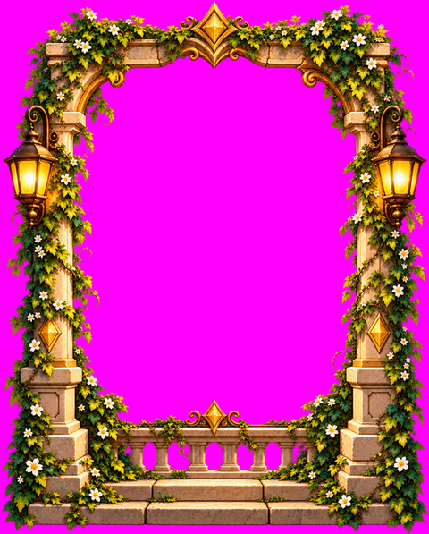
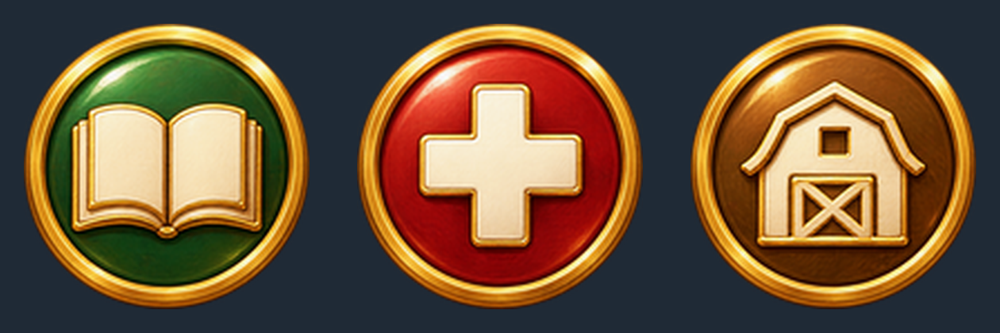
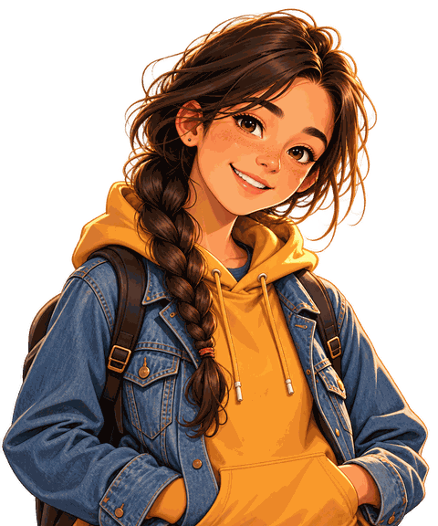
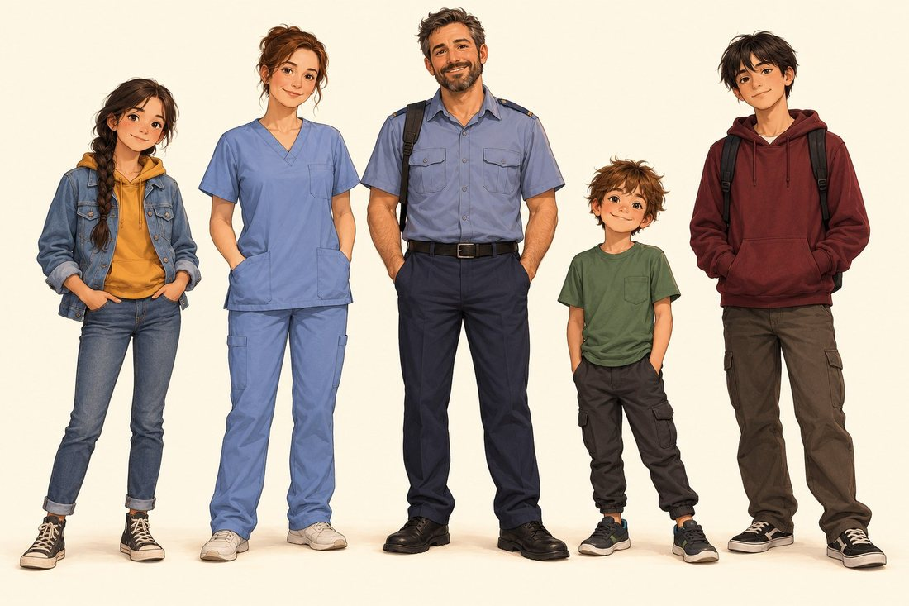
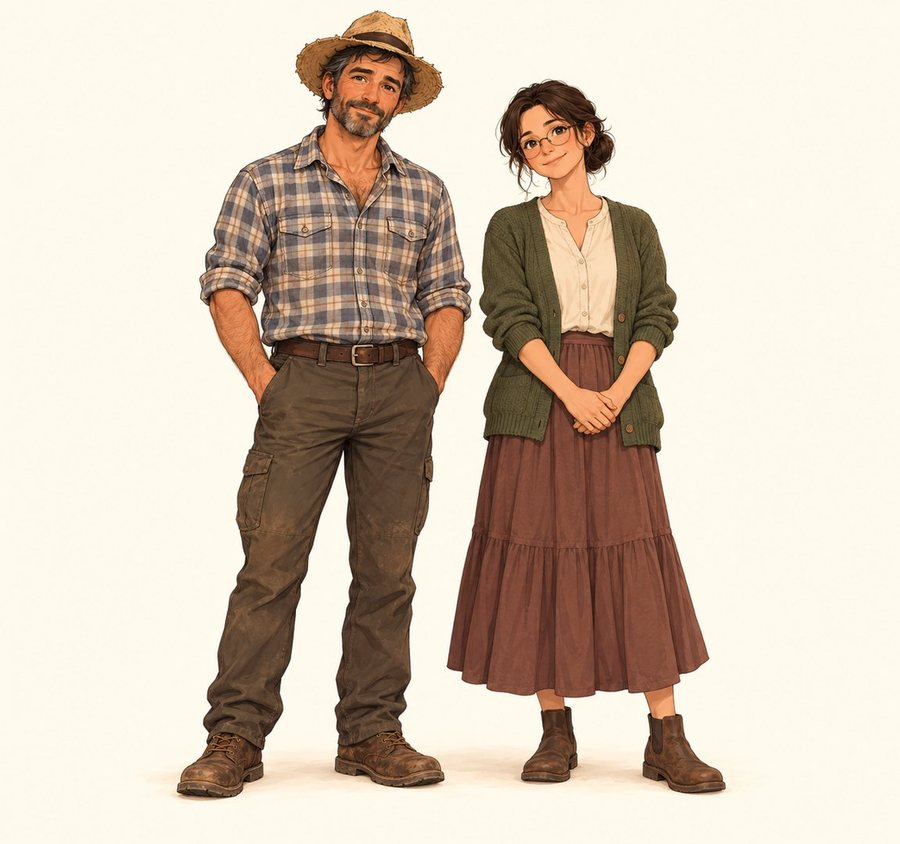
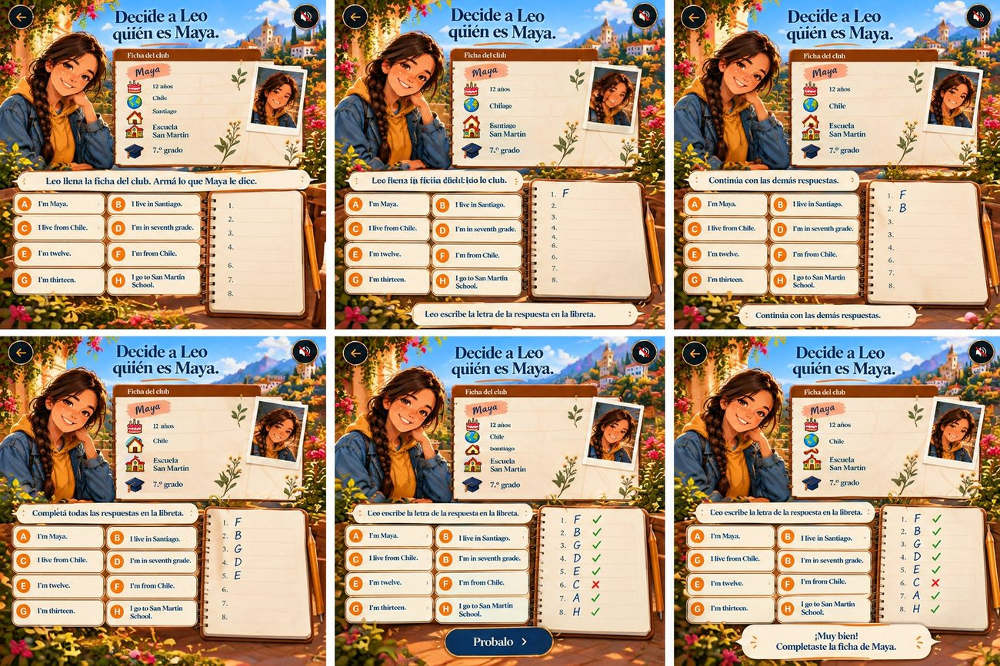
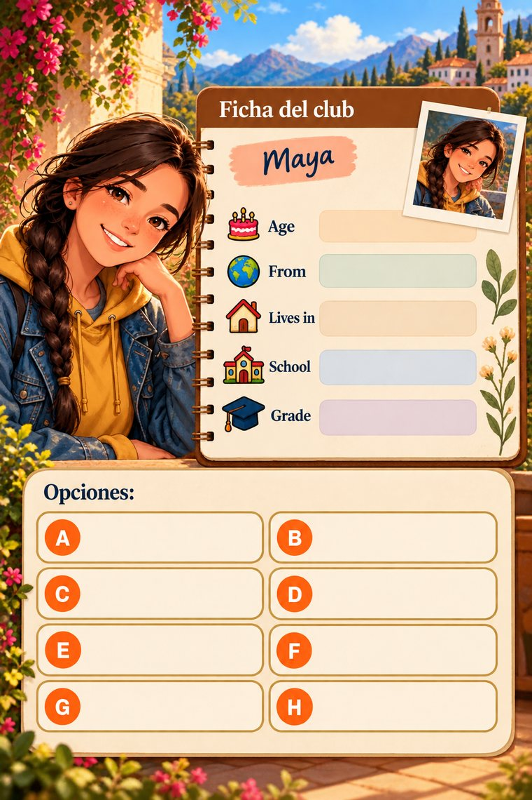
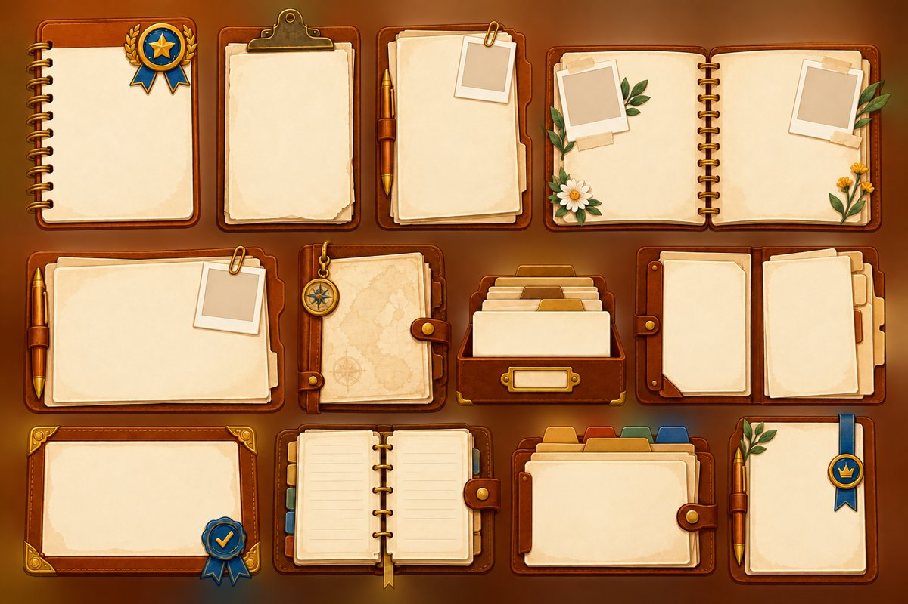
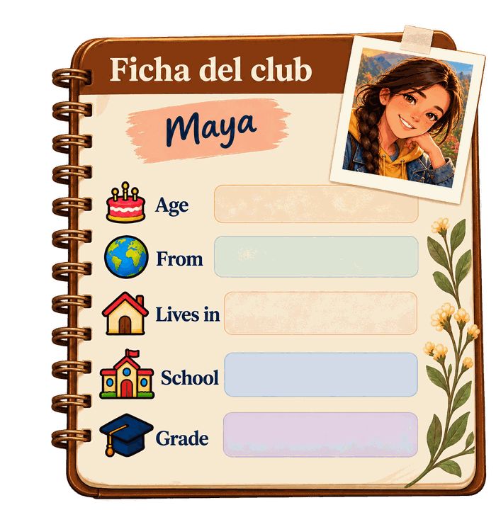

<title>Taller de imágenes</title>
<meta name="robots" content="noindex,nofollow">
<meta name="viewport" content="width=device-width,initial-scale=1,viewport-fit=cover">
<meta name="claude:viewport-fit-sides" content="cover">
<link rel="stylesheet" href="https://fonts.googleapis.com/css2?family=Fraunces:wght@600;700&family=Source+Sans+3:wght@400;600;700&display=swap">
<style>
:root{--bg:#eff1f3;--card:#ffffff;--fg:#1b2129;--mut:#5a6572;--bord:#d3d8de;--acc:#0e6a66;--acc2:#a4480b;--code:#f4f6f8;--ok:#1e7a3e;--mal:#b3590a;
--disp:'Fraunces',Georgia,serif;--body:'Source Sans 3',system-ui,-apple-system,'Segoe UI',sans-serif}
@media (prefers-color-scheme:dark){:root:not([data-theme="light"]){--bg:#11161c;--card:#19202a;--fg:#e7eaee;--mut:#9aa6b4;--bord:#2b3542;--acc:#5fc7bf;--acc2:#f0a15c;--code:#141a22;--ok:#6bd18c;--mal:#f0a15c;color-scheme:dark}}
:root[data-theme="dark"]{--bg:#11161c;--card:#19202a;--fg:#e7eaee;--mut:#9aa6b4;--bord:#2b3542;--acc:#5fc7bf;--acc2:#f0a15c;--code:#141a22;--ok:#6bd18c;--mal:#f0a15c;color-scheme:dark}
*{box-sizing:border-box}
body{margin:0;background:var(--bg);color:var(--fg);font:16px/1.5 var(--body);padding-block:18px 64px;padding-left:max(16px,env(safe-area-inset-left,0px));padding-right:max(16px,env(safe-area-inset-right,0px))}
main{max-width:760px;margin:0 auto}
h1{font:700 28px/1.15 var(--disp);margin:0 0 6px;text-wrap:balance}
h2.grupo{font:700 13px/1.2 var(--body);letter-spacing:.09em;text-transform:uppercase;color:var(--acc);margin:30px 0 10px}
h3{font:700 18px/1.25 var(--disp);margin:0 0 2px}
.sub{color:var(--mut);margin:0 0 14px}
.pasos{margin:0 0 6px;padding-left:20px}.pasos li{margin:4px 0}
a:focus-visible,button:focus-visible,input:focus-visible,summary:focus-visible{outline:3px solid var(--acc2);outline-offset:2px}
.avance{color:var(--mut);font-size:14px;margin:10px 0 0}
.card{background:var(--card);border:1px solid var(--bord);border-radius:12px;padding:14px;margin:0 0 12px}
.card-top{display:flex;justify-content:space-between;gap:10px;align-items:flex-start}
.card-top>div{min-width:0}
.hecha{display:flex;gap:6px;align-items:center;font-size:14px;font-weight:600;white-space:nowrap;padding:6px 8px}
.hecha input{width:20px;height:20px;accent-color:var(--acc)}
.card.listo{opacity:.62}
.arch{margin:8px 0 6px;font-size:14px;color:var(--mut)}
.lab{font-weight:700;font-size:13px;color:var(--mut);margin:8px 0 2px}
.pan{margin:0 0 10px;padding-left:22px;font-size:14px}.pan li{margin:6px 0}
code{font:600 13px ui-monospace,SFMono-Regular,Menlo,Consolas,monospace;background:var(--code);padding:1px 5px;border-radius:4px;overflow-wrap:anywhere}
.chip{display:inline-block;font-size:13px;font-weight:700;color:var(--acc2);border:1px solid var(--acc2);border-radius:99px;padding:2px 10px;margin:2px 0 8px}
.prompt{white-space:pre-wrap;overflow-wrap:anywhere;margin:0 0 10px;background:var(--code);border:1px solid var(--bord);border-radius:8px;padding:10px 12px;font:400 14px/1.5 var(--body)}
.fila{display:flex;gap:12px;align-items:center;flex-wrap:wrap}
.btn{font:700 15px var(--body);background:var(--acc);color:#fff;border:0;border-radius:8px;padding:10px 16px;min-height:44px;cursor:pointer}
@media (prefers-color-scheme:dark){:root:not([data-theme="light"]) .btn{color:#0b1412}}
:root[data-theme="dark"] .btn{color:#0b1412}
.aviso{font-size:14px;color:var(--acc);font-weight:600}
.btn-link{display:inline-flex;align-items:center;text-decoration:none}
details.hechas>summary{cursor:pointer;font-weight:700;padding:10px 0}
.refbox{margin:8px 0}
details.cmd{margin-top:8px}details.cmd summary{cursor:pointer;color:var(--mut);font-size:14px;padding:6px 0}
.mut{color:var(--mut)}.peq{font-size:13px}
.ref{width:100%;height:auto;border-radius:8px;display:block;margin:8px 0}
.ok{color:var(--ok);font-weight:700}.mal{color:var(--mal);font-weight:700}
#rev-out{display:grid;grid-template-columns:repeat(3,minmax(0,1fr));gap:10px;margin-top:10px}
.rev-c{background:#8c8c8c;border-radius:8px;padding:6px;text-align:center}
.rev-c canvas{width:100%;height:auto;display:block;border-radius:6px}
.rev-t{background:var(--card);border-radius:6px;padding:4px 6px;margin-top:6px;font-size:13px;text-align:left}
.tabla{width:100%;border-collapse:collapse;font-size:14px;margin:6px 0 4px}.tabla th,.tabla td{border-bottom:1px solid var(--bord);padding:5px 6px;text-align:left;vertical-align:top}
.tabla-wrap{overflow-x:auto}
@media (prefers-reduced-motion:reduce){*{scroll-behavior:auto!important}}
</style>
<main>
<h1>Taller de imágenes</h1>
<p class="sub">Lista viva de las imágenes que le pedimos a ChatGPT para los mundos. Lo pendiente va arriba y lo ya hecho abajo. Cuando surja algo nuevo, se suma acá.</p>
<ol class="pasos">
  <li><b>Elegí un pedido pendiente</b> y copiá su prompt.</li>
  <li><b>En ChatGPT</b>, adjuntá la referencia de ese pedido («Copiar imagen», «Compartir» o «Descargar») y pegá el prompt.</li>
  <li><b>Pegá o adjuntá el resultado en el chat conmigo.</b> Yo lo recorto, lo enchufo en los mundos y lo pruebo.</li>
</ol>
<p class="avance" id="avance" aria-live="polite"></p>

<h2 class="grupo">Pendientes</h2>
<article class="card" data-id="marco"><div class="card-top"><div><h3>Marco de las cuerdas, más ancho</h3><p class="mut">Hoy las columnas de piedra ocupan mucho y se ven estiradas al meterlas en la pantalla: se pide el mismo marco con columnas más finas y la abertura del medio mucho más ancha, para que las sogas se vean mejor.</p></div><label class="hecha"><input type="checkbox" data-hecha="marco"> Hecha</label></div><p class="arch">Una imagen · formato <b>retrato 4:5 (por ejemplo 1024×1280; si no, 1024×1536)</b> · archivo final <code>mundo-marco-cuerdas.png</code></p><p class="arch">Se usa en: los tres mundos de cuerdas (L1, L2 y L6 de A2 U01)</p><span class="chip">Adjuntar: las referencias de abajo</span><div class="refbox"><p class="mut peq">Es el marco que tiene hoy la app, sobre magenta liso. Adjuntala en ChatGPT: es lo que fija el estilo.</p><div class="fila"><button class="btn" data-copiar-img="img-ref-marco">Copiar imagen</button><button class="btn btn-compartir" data-img="img-ref-marco" hidden>Compartir</button><a class="btn btn-link" href="taller-imagenes/referencia-marco-cuerdas.png" target="_blank" rel="noopener">Abrir la imagen sola</a><a class="btn btn-link" href="taller-imagenes/referencia-marco-cuerdas.png" download="referencia-marco-cuerdas.png">Descargar</a><span class="aviso" role="status"></span></div></div><pre class="prompt" id="p-marco">Redraw the attached decorative frame as a WIDER, lighter version, keeping exactly the same art style, colors, materials and level of detail. The frame is a stone arch overgrown with green ivy and small white and yellow flowers, with a golden ornate crest at the top center, two stone pillars each carrying a lit hanging lantern, and a carved stone balustrade ledge with a few steps along the bottom. What must change: 1) The two side pillars become much slimmer: each side (pillar, lantern and ivy together) takes only about 11% of the total width, so the central opening takes about 78% of the width (in the attached image each side takes about 20%). 2) Keep the top crest and the bottom ledge with the same height proportions as in the attached image, and keep the whole frame perfectly symmetrical from left to right. 3) Portrait canvas, ratio 4:5. 4) The central opening AND everything outside the frame must be ONE perfectly flat solid magenta color (#FF00FF), exactly like in the attached image: no gradient, no glow, no shadow, no ivy or leaves hanging into the opening. 5) No text, no letters, no logos anywhere.</pre><div class="fila"><button class="btn" data-copiar="p-marco">Copiar prompt</button><span class="aviso" role="status"></span></div><p class="mut peq">Cuando me la pases: le saco el magenta (queda transparente), la cargo en lugar del marco actual y ajusto el recorte de las columnas. Si las columnas siguen anchas, pedí «columnas aún más finas (9%)».</p></article><article class="card" data-id="habitacion"><div class="card-top"><div><h3>Habitación llena de objetos (idea «Señalar en la escena»)</h3><p class="mut">Para ejercicios de escucha donde hay que tocar un objeto en la escena («The book is on the table, next to the red cup»). Los objetos tienen que verse separados y sin tapar a otros.</p></div><label class="hecha"><input type="checkbox" data-hecha="habitacion"> Hecha</label></div><p class="arch">Una imagen · formato <b>apaisada 3:2 (por ejemplo 1536×1024)</b> · archivo final <code>mundo-escena-habitacion.jpg</code></p><p class="arch">Se usa en: idea 10 (Señalar en la escena) y la 11 (Llamada con anotador)</p><span class="chip">Adjuntar: las referencias de abajo</span><div class="refbox"><p class="mut peq">Es una escena que ya tiene la app: sirve para que ChatGPT copie el estilo (colores, luz, nivel de detalle). Adjuntala.</p><div class="fila"><button class="btn" data-copiar-img="img-ref-habitacion">Copiar imagen</button><button class="btn btn-compartir" data-img="img-ref-habitacion" hidden>Compartir</button><a class="btn btn-link" href="taller-imagenes/referencia-estilo-escena.png" target="_blank" rel="noopener">Abrir la imagen sola</a><a class="btn btn-link" href="taller-imagenes/referencia-estilo-escena.png" download="referencia-estilo-escena.png">Descargar</a><span class="aviso" role="status"></span></div></div><pre class="prompt" id="p-habitacion">Create ONE detailed illustration of a cozy, bright school-club room seen from the front, slightly from above, in exactly the same art style, colors, lighting and level of detail as the attached reference image (warm contemporary 2D animation look, soft sunlight, clean outlines). The room contains many everyday objects, each one fully visible, clearly separated from the others and placed in a distinct position, with nothing hidden behind something else: 1) a wooden table in the center, with a red cup and a blue book on top of it; 2) a green backpack on the floor, to the right of the table; 3) a chair on the left of the table with a sleeping orange cat on it; 4) a window on the back wall with a small green plant on the windowsill; 5) a round wall clock above the door, with no numerals, only marks; 6) a wooden shelf on the right wall with three books of different colors and a yellow lamp; 7) a stool in the lower left with a bag of apples on it; 8) a round blue rug on the floor under the table; 9) a basket with a ball next to the door. No people. No text, no letters, no numbers, no signs and no logos anywhere in the image. Landscape ratio 3:2.</pre><div class="fila"><button class="btn" data-copiar="p-habitacion">Copiar prompt</button><span class="aviso" role="status"></span></div><p class="mut peq">Cuando me la pases: la achico, la cargo como escena y marco las zonas tocables de cada objeto (esto último lo hago yo). Si algún objeto sale tapado o repetido, pedí «rehacé la imagen dejando el objeto N bien visible».</p></article><article class="card" data-id="plano"><div class="card-top"><div><h3>Plano del barrio (idea «Mapa y recorrido»)</h3><p class="mut">Plano visto desde arriba, con calles claras, para que un personaje camine una ruta y se vea dónde llega. Pocos edificios, bien separados, sin carteles.</p></div><label class="hecha"><input type="checkbox" data-hecha="plano"> Hecha</label></div><p class="arch">Una imagen · formato <b>vertical 4:5 (por ejemplo 1024×1280)</b> · archivo final <code>mundo-plano-barrio.jpg</code></p><p class="arch">Se usa en: idea 1 (Mapa y recorrido); también sirve a sociales</p><span class="chip">Adjuntar: las referencias de abajo</span><div class="refbox"><p class="mut peq">Es una escena que ya tiene la app: sirve para que ChatGPT copie el estilo (colores, luz, nivel de detalle). Adjuntala.</p><div class="fila"><button class="btn" data-copiar-img="img-ref-plano">Copiar imagen</button><button class="btn btn-compartir" data-img="img-ref-plano" hidden>Compartir</button><a class="btn btn-link" href="taller-imagenes/referencia-estilo-escena.png" target="_blank" rel="noopener">Abrir la imagen sola</a><a class="btn btn-link" href="taller-imagenes/referencia-estilo-escena.png" download="referencia-estilo-escena.png">Descargar</a><span class="aviso" role="status"></span></div></div><pre class="prompt" id="p-plano">Create ONE illustrated top-down map of a small, friendly town neighbourhood, in exactly the same art style, colors and lighting as the attached reference image (warm contemporary 2D animation look, clean outlines, soft light). Clear streets form a simple grid with four intersections. Seven places, each a distinct color and clearly separated: a school with a courtyard (bottom left), a hospital (top left), a bakery with a striped awning (top right), a park with trees and a small pond (center right), a bus stop with a small shelter (bottom right), a farm field with a barn (far top), and a house with a garden (center left). A river runs across the lower third of the map with exactly one bridge that connects two streets. Roads are wide and easy to follow with a finger. No people, no cars. No text, no letters, no numbers, no signs and no logos anywhere. Portrait ratio 4:5.</pre><div class="fila"><button class="btn" data-copiar="p-plano">Copiar prompt</button><span class="aviso" role="status"></span></div><p class="mut peq">Cuando me la pases: la cargo como plano, marco las calles como camino (para que Leo camine) y las posiciones de cada lugar. Si una calle no se entiende, pedí «rehacé el plano con las calles más anchas».</p></article><article class="card" data-id="platos"><div class="card-top"><div><h3>Seis platos de comida (ideas «Pedido en la mesa» y «Caja y vuelto»)</h3><p class="mut">Seis medallones de comida vistos desde arriba, para los platos que el mozo trae a la mesa. Misma técnica de las láminas de medallones (fondo liso, recorte redondo).</p></div><label class="hecha"><input type="checkbox" data-hecha="platos"> Hecha</label></div><p class="arch">Una imagen · formato <b>lámina 3 columnas × 2 filas, apaisada 3:2 (1536×1024)</b> · archivo final <code>mundo-plato-sopa.png … mundo-plato-torta.png (6 archivos)</code></p><p class="arch">Se usa en: ideas 2 y 3</p><span class="chip">Adjuntar: las referencias de abajo</span><div class="refbox"><p class="mut peq">Adjuntá la referencia de los medallones (la de la lámina A y B): fija el aro, el fondo liso y el recorte redondo.</p><div class="fila"><button class="btn" data-copiar-img="img-ref-platos">Copiar imagen</button><button class="btn btn-compartir" data-img="img-ref-platos" hidden>Compartir</button><a class="btn btn-link" href="taller-imagenes/referencia-medallones.png" target="_blank" rel="noopener">Abrir la imagen sola</a><a class="btn btn-link" href="taller-imagenes/referencia-medallones.png" download="referencia-medallones.png">Descargar</a><span class="aviso" role="status"></span></div></div><pre class="prompt" id="p-platos">Create ONE contact-sheet image made of 6 separate round plate icons arranged in a grid of 3 columns x 2 rows. Each plate sits perfectly centered in its own SQUARE panel; all 6 panels have exactly the same size. The background of every panel is one perfectly flat, solid, dark slate color (#1f2a36): no gradient, no texture, no shadow on the background. The panels are separated by thin pure-white gutters (about 2% of the sheet width), with a thin pure-white border around the whole sheet. Every plate is seen from directly above, is perfectly circular, fills about 88% of the panel width, and has the same design family as the attached medallions: a polished glossy gold rim with a soft bevel and a rich, appetizing, simply drawn dish in the center, same art style as the reference. Dishes, from left to right and from top to bottom: 1) a bowl of tomato soup; 2) a plate of spaghetti with sauce; 3) a green salad with tomato and cucumber; 4) a sandwich cut in half; 5) a glass of orange juice with a straw on a saucer; 6) a slice of chocolate cake on a plate. No text, no letters, no numbers, no logos anywhere. Canvas ratio 3:2.</pre><div class="fila"><button class="btn" data-copiar="p-platos">Copiar prompt</button><span class="aviso" role="status"></span></div><p class="mut peq">Cuando me la pases: la reviso con el revisor del taller, la corto con el comando de medallones (redondos y transparentes) y los uso como platos del restaurante. Comando: python projects/ingles/herramientas/cortar_lamina.py LAMINA.png mundo-plato-sopa mundo-plato-pasta mundo-plato-ensalada mundo-plato-sandwich mundo-plato-jugo mundo-plato-torta --destino=app --prefijo= --cols=3 --filas=2 --proporcion=1 --ancho=192 --maxkb=24 --medallon</p></article><article class="card" data-id="rec-a"><div class="card-top"><div><h3>Personajes recortados · lámina 1 (Leo, Ana, Pablo, Tom)</h3><p class="mut">Cuatro personajes de la familia, de la cintura para arriba, sobre fondo magenta liso, para sacarles el fondo y usarlos como la Maya recortada.</p></div><label class="hecha"><input type="checkbox" data-hecha="rec-a"> Hecha</label></div><p class="arch">Una imagen · formato <b>cuadrada 1:1 (1536×1536), 2 columnas × 2 filas</b> · archivo final <code>4 PNG transparentes: mundo-recorte-leo, -ana, -pablo, -tom</code></p><p class="arch">Se usa en: todos los mundos: personajes con fondo transparente, como Maya</p><span class="chip">Adjuntar: las referencias de abajo</span><div class="refbox"><p class="mut peq">Es el recorte de Maya: fija el estilo de recorte (bordes limpios, sin halo). Adjuntala.</p><div class="fila"><button class="btn" data-copiar-img="img-ref-rec-a">Copiar imagen</button><button class="btn btn-compartir" data-img="img-ref-rec-a" hidden>Compartir</button><a class="btn btn-link" href="taller-imagenes/referencia-guia-recorte-maya.png" target="_blank" rel="noopener">Abrir la imagen sola</a><a class="btn btn-link" href="taller-imagenes/referencia-guia-recorte-maya.png" download="referencia-guia-recorte-maya.png">Descargar</a><span class="aviso" role="status"></span></div></div><div class="refbox"><p class="mut peq">La hoja de personajes: fija las caras, el pelo y la ropa de cada uno. Adjuntala.</p><div class="fila"><button class="btn" data-copiar-img="img-ref-rec-a1">Copiar imagen</button><button class="btn btn-compartir" data-img="img-ref-rec-a1" hidden>Compartir</button><a class="btn btn-link" href="taller-imagenes/referencia-personajes-a2u01.jpg" target="_blank" rel="noopener">Abrir la imagen sola</a><a class="btn btn-link" href="taller-imagenes/referencia-personajes-a2u01.jpg" download="referencia-personajes-a2u01.jpg">Descargar</a><span class="aviso" role="status"></span></div></div><pre class="prompt" id="p-rec-a">Create ONE contact-sheet image with 4 separate characters arranged in a grid of 2 columns x 2 rows. Each panel is a SQUARE of exactly the same size, separated from its neighbours by thin pure-white gutters (about 2% of the sheet width), with a thin pure-white border around the whole sheet. The background of every panel is ONE perfectly flat, solid, pure magenta (#FF00FF): no gradient, no shadow, no glow, no texture, nothing else in the panel. Every character is shown from the waist up, facing slightly toward the viewer, centered, filling about 90% of the panel height, in exactly the same art style, line quality, colors and clean cut-out look as the attached cut-out of Maya (clean outlines, no soft halo, no motion blur, no stray floating hair strands, nothing touching the panel edges). Keep each character&#x27;s face, hair and clothes exactly as in the attached character reference. Never use magenta, pink or purple in clothes or hair. Characters, from left to right and from top to bottom: 1) Leo, Maya&#x27;s 8-year-old brother, messy dark hair, green t-shirt, cheerful grin. 2) Ana, Maya&#x27;s mother, about 40, hair tied back, light blue nurse scrubs, warm calm smile. 3) Pablo, Maya&#x27;s father, about 42, short beard, blue-grey bus-driver uniform shirt, friendly tired smile. 4) Tom, 13, messy dark hair, bordeaux hoodie with a backpack strap, relaxed smile. No text, no letters, no numbers, no logos anywhere. Square canvas ratio 1:1.</pre><div class="fila"><button class="btn" data-copiar="p-rec-a">Copiar prompt</button><span class="aviso" role="status"></span></div><p class="mut peq">Cuando me la pases: la corto con el comando de recortes (saca el magenta y deja transparencia real): python projects/ingles/herramientas/cortar_lamina.py LAMINA.png mundo-recorte-leo mundo-recorte-ana mundo-recorte-pablo mundo-recorte-tom --destino=app --prefijo= --cols=2 --filas=2 --proporcion=1 --ancho=480 --maxkb=140 --recorte</p></article><article class="card" data-id="rec-b"><div class="card-top"><div><h3>Personajes recortados · lámina 2 (Sofía, Marcos, Clara y Maya señalando)</h3><p class="mut">Sofía, los tíos y una segunda pose de Maya. Adjuntá las cuatro referencias.</p></div><label class="hecha"><input type="checkbox" data-hecha="rec-b"> Hecha</label></div><p class="arch">Una imagen · formato <b>cuadrada 1:1 (1536×1536), 2 columnas × 2 filas</b> · archivo final <code>4 PNG transparentes: mundo-recorte-sofia, -marcos, -clara, -maya-senala</code></p><p class="arch">Se usa en: todos los mundos: personajes con fondo transparente, como Maya</p><span class="chip">Adjuntar: las referencias de abajo</span><div class="refbox"><p class="mut peq">Es el recorte de Maya: fija el estilo de recorte (bordes limpios, sin halo). Adjuntala.</p><div class="fila"><button class="btn" data-copiar-img="img-ref-rec-b">Copiar imagen</button><button class="btn btn-compartir" data-img="img-ref-rec-b" hidden>Compartir</button><a class="btn btn-link" href="taller-imagenes/referencia-guia-recorte-maya.png" target="_blank" rel="noopener">Abrir la imagen sola</a><a class="btn btn-link" href="taller-imagenes/referencia-guia-recorte-maya.png" download="referencia-guia-recorte-maya.png">Descargar</a><span class="aviso" role="status"></span></div></div><div class="refbox"><p class="mut peq">Hoja de los tíos: Marcos (sombrero de paja, camisa a cuadros) y Clara (anteojos redondos, rodete, cárdigan verde oliva).</p><div class="fila"><button class="btn" data-copiar-img="img-ref-rec-b1">Copiar imagen</button><button class="btn btn-compartir" data-img="img-ref-rec-b1" hidden>Compartir</button><a class="btn btn-link" href="taller-imagenes/referencia-personajes-tios.jpg" target="_blank" rel="noopener">Abrir la imagen sola</a><a class="btn btn-link" href="taller-imagenes/referencia-personajes-tios.jpg" download="referencia-personajes-tios.jpg">Descargar</a><span class="aviso" role="status"></span></div></div><div class="refbox"><p class="mut peq">Sofía: diadema roja, pelo castaño ondulado, cárdigan verde azulado sobre remera blanca.</p><div class="fila"><button class="btn" data-copiar-img="img-ref-rec-b2">Copiar imagen</button><button class="btn btn-compartir" data-img="img-ref-rec-b2" hidden>Compartir</button><a class="btn btn-link" href="taller-imagenes/referencia-sofia.jpg" target="_blank" rel="noopener">Abrir la imagen sola</a><a class="btn btn-link" href="taller-imagenes/referencia-sofia.jpg" download="referencia-sofia.jpg">Descargar</a><span class="aviso" role="status"></span></div></div><pre class="prompt" id="p-rec-b">Create ONE contact-sheet image with 4 separate characters arranged in a grid of 2 columns x 2 rows. Each panel is a SQUARE of exactly the same size, separated from its neighbours by thin pure-white gutters (about 2% of the sheet width), with a thin pure-white border around the whole sheet. The background of every panel is ONE perfectly flat, solid, pure magenta (#FF00FF): no gradient, no shadow, no glow, no texture, nothing else in the panel. Every character is shown from the waist up, facing slightly toward the viewer, centered, filling about 90% of the panel height, in exactly the same art style, line quality, colors and clean cut-out look as the attached cut-out of Maya (clean outlines, no soft halo, no motion blur, no stray floating hair strands, nothing touching the panel edges). Keep each character&#x27;s face, hair and clothes exactly as in the attached character reference. Never use magenta, pink or purple in clothes or hair. Characters, from left to right and from top to bottom: 1) Sofia, 14, wavy brown hair with a red headband, teal cardigan over a white top, warm smile. 2) Marcos, Maya&#x27;s uncle, about 45, tanned, worn straw hat, checked work shirt with rolled sleeves, relaxed smile. 3) Clara, Maya&#x27;s aunt, about 38, round glasses, dark hair in a low bun, olive cardigan over a cream blouse, kind look. 4) Maya, 12, braid, denim jacket over a mustard hoodie, pointing with her right index finger to her right side, bright smile. No text, no letters, no numbers, no logos anywhere. Square canvas ratio 1:1.</pre><div class="fila"><button class="btn" data-copiar="p-rec-b">Copiar prompt</button><span class="aviso" role="status"></span></div><p class="mut peq">Cuando me la pases: la corto con el comando de recortes (saca el magenta y deja transparencia real): python projects/ingles/herramientas/cortar_lamina.py LAMINA.png mundo-recorte-sofia mundo-recorte-marcos mundo-recorte-clara mundo-recorte-maya-senala --destino=app --prefijo= --cols=2 --filas=2 --proporcion=1 --ancho=480 --maxkb=140 --recorte</p></article><article class="card" data-id="rec-c"><div class="card-top"><div><h3>Personajes recortados · lámina 3 (segundas poses)</h3><p class="mut">Cuatro poses con más vida, para pantallas donde el personaje reacciona.</p></div><label class="hecha"><input type="checkbox" data-hecha="rec-c"> Hecha</label></div><p class="arch">Una imagen · formato <b>cuadrada 1:1 (1536×1536), 2 columnas × 2 filas</b> · archivo final <code>4 PNG transparentes: mundo-recorte-leo-saluda, -tom-lee, -sofia-rie, -pablo-brazos</code></p><p class="arch">Se usa en: todos los mundos: personajes con fondo transparente, como Maya</p><span class="chip">Adjuntar: las referencias de abajo</span><div class="refbox"><p class="mut peq">Es el recorte de Maya: fija el estilo de recorte (bordes limpios, sin halo). Adjuntala.</p><div class="fila"><button class="btn" data-copiar-img="img-ref-rec-c">Copiar imagen</button><button class="btn btn-compartir" data-img="img-ref-rec-c" hidden>Compartir</button><a class="btn btn-link" href="taller-imagenes/referencia-guia-recorte-maya.png" target="_blank" rel="noopener">Abrir la imagen sola</a><a class="btn btn-link" href="taller-imagenes/referencia-guia-recorte-maya.png" download="referencia-guia-recorte-maya.png">Descargar</a><span class="aviso" role="status"></span></div></div><div class="refbox"><p class="mut peq">La hoja de personajes: fija las caras, el pelo y la ropa de cada uno. Adjuntala.</p><div class="fila"><button class="btn" data-copiar-img="img-ref-rec-c1">Copiar imagen</button><button class="btn btn-compartir" data-img="img-ref-rec-c1" hidden>Compartir</button><a class="btn btn-link" href="taller-imagenes/referencia-personajes-a2u01.jpg" target="_blank" rel="noopener">Abrir la imagen sola</a><a class="btn btn-link" href="taller-imagenes/referencia-personajes-a2u01.jpg" download="referencia-personajes-a2u01.jpg">Descargar</a><span class="aviso" role="status"></span></div></div><div class="refbox"><p class="mut peq">Sofía: diadema roja, pelo castaño ondulado, cárdigan verde azulado sobre remera blanca.</p><div class="fila"><button class="btn" data-copiar-img="img-ref-rec-c2">Copiar imagen</button><button class="btn btn-compartir" data-img="img-ref-rec-c2" hidden>Compartir</button><a class="btn btn-link" href="taller-imagenes/referencia-sofia.jpg" target="_blank" rel="noopener">Abrir la imagen sola</a><a class="btn btn-link" href="taller-imagenes/referencia-sofia.jpg" download="referencia-sofia.jpg">Descargar</a><span class="aviso" role="status"></span></div></div><pre class="prompt" id="p-rec-c">Create ONE contact-sheet image with 4 separate characters arranged in a grid of 2 columns x 2 rows. Each panel is a SQUARE of exactly the same size, separated from its neighbours by thin pure-white gutters (about 2% of the sheet width), with a thin pure-white border around the whole sheet. The background of every panel is ONE perfectly flat, solid, pure magenta (#FF00FF): no gradient, no shadow, no glow, no texture, nothing else in the panel. Every character is shown from the waist up, facing slightly toward the viewer, centered, filling about 90% of the panel height, in exactly the same art style, line quality, colors and clean cut-out look as the attached cut-out of Maya (clean outlines, no soft halo, no motion blur, no stray floating hair strands, nothing touching the panel edges). Keep each character&#x27;s face, hair and clothes exactly as in the attached character reference. Never use magenta, pink or purple in clothes or hair. Characters, from left to right and from top to bottom: 1) Leo waving with one hand, big smile. 2) Tom reading a small notebook, looking down at it, focused. 3) Sofia laughing, one hand near her mouth. 4) Pablo with his arms crossed, relaxed and friendly. No text, no letters, no numbers, no logos anywhere. Square canvas ratio 1:1.</pre><div class="fila"><button class="btn" data-copiar="p-rec-c">Copiar prompt</button><span class="aviso" role="status"></span></div><p class="mut peq">Cuando me la pases: la corto con el comando de recortes (saca el magenta y deja transparencia real): python projects/ingles/herramientas/cortar_lamina.py LAMINA.png mundo-recorte-leo-saluda mundo-recorte-tom-lee mundo-recorte-sofia-rie mundo-recorte-pablo-brazos --destino=app --prefijo= --cols=2 --filas=2 --proporcion=1 --ancho=480 --maxkb=140 --recorte</p></article>
<h2 class="grupo">Láminas guía: cómo funcionaría cada mundo</h2>
<p class="mut">Pedile a ChatGPT una lámina de seis pantallas por idea, con la maqueta como referencia. Sirven de guía para diseñar cada pantalla.</p>
<details class="hechas"><summary>Láminas de cómo funcionaría cada mundo · 25 ideas (abrir)</summary><div class="refbox"><p class="mut peq">Adjuntá siempre ESTA maqueta: es la referencia de formato y de estilo. Después pegá el prompt de la idea que quieras.</p><div class="fila"><button class="btn" data-copiar-img="img-ref-guia6">Copiar imagen</button><button class="btn btn-compartir" data-img="img-ref-guia6" hidden>Compartir</button><a class="btn btn-link" href="taller-imagenes/referencia-guia-seis-pasos.jpg" target="_blank" rel="noopener">Abrir la imagen sola</a><a class="btn btn-link" href="taller-imagenes/referencia-guia-seis-pasos.jpg" download="referencia-guia-seis-pasos.jpg">Descargar</a><span class="aviso" role="status"></span></div></div><article class="card" data-id="lg1"><div class="card-top"><div><h3>1 · Mapa y recorrido</h3><p class="mut">Armás una ruta con indicaciones en inglés y ves a Leo caminarla.</p></div><label class="hecha"><input type="checkbox" data-hecha="lg1"> Hecha</label></div><pre class="prompt" id="p-lg1">Using the attached sheet as the EXACT layout and art-style reference (six portrait phone screens in a grid of 3 columns x 2 rows, the same warm painted fantasy-valley background, cream paper elements with golden borders, the same friendly illustrated characters), create ONE new storyboard sheet that shows, screen by screen, how this interactive learning exercise works. Exercise: «Mapa y recorrido». Screen 1: the starting situation. Un plano del barrio visto desde arriba: la escuela, el hospital, una panadería, un parque, un río con un puente. Leo (un muñequito) está parado en la escuela. La panadería tiene un cartelito dorado con su nombre. Abajo, fichas de indicaciones: «go straight», «turn left», «turn right», «cross the bridge». Screens 2, 3 and 4: the student&#x27;s actions, in order. Tocás las fichas en orden para armar la ruta. Cada ficha agrega un tramo punteado al plano, como un hilo. Then: Tocás «Probalo». Then: Leo camina el recorrido tramo por tramo, con una pausa breve en cada giro. Screen 5: the correct outcome. Screen 6: the same exercise after a mistake, shown in warm amber (never red). Outcome description: Si llega, la panadería se ilumina y suena una campanita suave. Si te equivocaste, camina hasta donde lo mandaste, se frena (por ejemplo, frente al río) y queda con un «?» ámbar; el tramo errado queda punteado en ámbar. Nunca dice «mal». Keep any text inside the screens very short (a few words, in simple English or Spanish), like in the reference. Sober, elegant and professional look. Landscape canvas ratio 3:2.</pre><div class="fila"><button class="btn" data-copiar="p-lg1">Copiar prompt</button><span class="aviso" role="status"></span></div></article><article class="card" data-id="lg2"><div class="card-top"><div><h3>2 · Pedido en la mesa</h3><p class="mut">Pedís en un restaurante y el mozo te trae exactamente lo que dijiste.</p></div><label class="hecha"><input type="checkbox" data-hecha="lg2"> Hecha</label></div><pre class="prompt" id="p-lg2">Using the attached sheet as the EXACT layout and art-style reference (six portrait phone screens in a grid of 3 columns x 2 rows, the same warm painted fantasy-valley background, cream paper elements with golden borders, the same friendly illustrated characters), create ONE new storyboard sheet that shows, screen by screen, how this interactive learning exercise works. Exercise: «Pedido en la mesa». Screen 1: the starting situation. Una mesa con mantel, un menú de cartulina con cuatro platos y bebidas ilustrados, y el mozo (retrato). A la derecha, una tarjeta con lo que quiere el cliente, en dibujos («una sopa y un jugo»). Screens 2, 3 and 4: the student&#x27;s actions, in order. Tocás frases para armar el pedido («I’d like a soup, please.» / «And a juice.»). Cada frase agrega una línea a la comanda. Then: Tocás «Llamar al mozo». Then: El mozo se va y vuelve: los platos aparecen sobre la mesa de a uno, con un destello. Screen 5: the correct outcome. Screen 6: the same exercise after a mistake, shown in warm amber (never red). Outcome description: Si lo que apareció coincide con la tarjeta del cliente, el cliente sonríe. Si hay un plato de más o de menos, ese plato queda con un aro ámbar y el cliente levanta una ceja. Podés corregir la comanda y repetir. Keep any text inside the screens very short (a few words, in simple English or Spanish), like in the reference. Sober, elegant and professional look. Landscape canvas ratio 3:2.</pre><div class="fila"><button class="btn" data-copiar="p-lg2">Copiar prompt</button><span class="aviso" role="status"></span></div></article><article class="card" data-id="lg3"><div class="card-top"><div><h3>3 · Caja y vuelto</h3><p class="mut">Pagás con billetes y monedas y ves el vuelto que te devuelven.</p></div><label class="hecha"><input type="checkbox" data-hecha="lg3"> Hecha</label></div><pre class="prompt" id="p-lg3">Using the attached sheet as the EXACT layout and art-style reference (six portrait phone screens in a grid of 3 columns x 2 rows, the same warm painted fantasy-valley background, cream paper elements with golden borders, the same friendly illustrated characters), create ONE new storyboard sheet that shows, screen by screen, how this interactive learning exercise works. Exercise: «Caja y vuelto». Screen 1: the starting situation. Un mostrador con tres productos con su precio, una caja registradora, una billetera con billetes y monedas. Screens 2, 3 and 4: the student&#x27;s actions, in order. La cajera dice «That’s twelve fifty.» Then: Arrastrás billetes y monedas a la bandeja hasta cubrir ese total. Then: Tocás «Pagar». Screen 5: the correct outcome. Screen 6: the same exercise after a mistake, shown in warm amber (never red). Outcome description: La caja cuenta moneda por moneda y el ticket imprime línea a línea. Si falta, la cajera pide el resto y se resalta el faltante en ámbar; si sobra, el vuelto cae a la bandeja y se ve cuánto es. Keep any text inside the screens very short (a few words, in simple English or Spanish), like in the reference. Sober, elegant and professional look. Landscape canvas ratio 3:2.</pre><div class="fila"><button class="btn" data-copiar="p-lg3">Copiar prompt</button><span class="aviso" role="status"></span></div></article><article class="card" data-id="lg4"><div class="card-top"><div><h3>4 · Tira de película</h3><p class="mut">Ordenás los cuadros de una historia y la película se proyecta.</p></div><label class="hecha"><input type="checkbox" data-hecha="lg4"> Hecha</label></div><pre class="prompt" id="p-lg4">Using the attached sheet as the EXACT layout and art-style reference (six portrait phone screens in a grid of 3 columns x 2 rows, the same warm painted fantasy-valley background, cream paper elements with golden borders, the same friendly illustrated characters), create ONE new storyboard sheet that shows, screen by screen, how this interactive learning exercise works. Exercise: «Tira de película». Screen 1: the starting situation. Un proyector antiguo y cinco fotogramas desordenados en una tira, cada uno con su frase («First, Maya gets up.»). Screens 2, 3 and 4: the student&#x27;s actions, in order. Arrastrás los fotogramas para ordenarlos. Then: Tocás «Proyectar». Then: La tira corre por el visor, un cuadro por vez, con un sonido de proyector suave. Screen 5: the correct outcome. Screen 6: the same exercise after a mistake, shown in warm amber (never red). Outcome description: Si el orden es bueno, la película se ve fluida y termina con un fundido. Si hay un cuadro fuera de lugar, la imagen «salta» y ese cuadro parpadea en ámbar: se nota que la historia no cierra. Keep any text inside the screens very short (a few words, in simple English or Spanish), like in the reference. Sober, elegant and professional look. Landscape canvas ratio 3:2.</pre><div class="fila"><button class="btn" data-copiar="p-lg4">Copiar prompt</button><span class="aviso" role="status"></span></div></article><article class="card" data-id="lg5"><div class="card-top"><div><h3>5 · Cielo de 24 horas</h3><p class="mut">Movés el sol por un arco y el cielo cambia con la hora.</p></div><label class="hecha"><input type="checkbox" data-hecha="lg5"> Hecha</label></div><pre class="prompt" id="p-lg5">Using the attached sheet as the EXACT layout and art-style reference (six portrait phone screens in a grid of 3 columns x 2 rows, the same warm painted fantasy-valley background, cream paper elements with golden borders, the same friendly illustrated characters), create ONE new storyboard sheet that shows, screen by screen, how this interactive learning exercise works. Exercise: «Cielo de 24 horas». Screen 1: the starting situation. Un arco de piedra con un sol dorado en un extremo y una luna en el otro; el cielo de fondo es un degradé suave. Arriba, una frase: «School starts at eight.» Screens 2, 3 and 4: the student&#x27;s actions, in order. Arrastrás el sol por el arco. Then: A medida que se mueve, el cielo cambia de color y un reloj chiquito marca la hora. Then: Soltás el sol donde creés que corresponde. Screen 5: the correct outcome. Screen 6: the same exercise after a mistake, shown in warm amber (never red). Outcome description: El horario correcto deja una marca dorada en el arco; los horarios de la Lección van quedando como marcadores en ese arco, y al final tenés tu día dibujado en el cielo. Keep any text inside the screens very short (a few words, in simple English or Spanish), like in the reference. Sober, elegant and professional look. Landscape canvas ratio 3:2.</pre><div class="fila"><button class="btn" data-copiar="p-lg5">Copiar prompt</button><span class="aviso" role="status"></span></div></article><article class="card" data-id="lg6"><div class="card-top"><div><h3>6 · Balanza de ecuaciones</h3><p class="mut">Mantenés una balanza en equilibrio mientras aislás la incógnita.</p></div><label class="hecha"><input type="checkbox" data-hecha="lg6"> Hecha</label></div><pre class="prompt" id="p-lg6">Using the attached sheet as the EXACT layout and art-style reference (six portrait phone screens in a grid of 3 columns x 2 rows, the same warm painted fantasy-valley background, cream paper elements with golden borders, the same friendly illustrated characters), create ONE new storyboard sheet that shows, screen by screen, how this interactive learning exercise works. Exercise: «Balanza de ecuaciones». Screen 1: the starting situation. Una balanza antigua: de un lado, una caja misteriosa «x» y tres pesas de 1; del otro, siete pesas de 1. Screens 2, 3 and 4: the student&#x27;s actions, in order. Tocás «quitar 3» y lo hacés de los dos lados a la vez. Then: La balanza oscila y se estabiliza. Then: Seguís hasta que la caja queda sola. Screen 5: the correct outcome. Screen 6: the same exercise after a mistake, shown in warm amber (never red). Outcome description: Si quitás de un solo lado, la balanza se inclina con un crujido suave y te lo marca en ámbar. Cuando la caja queda sola, se abre y muestra el valor. Keep any text inside the screens very short (a few words, in simple English or Spanish), like in the reference. Sober, elegant and professional look. Landscape canvas ratio 3:2.</pre><div class="fila"><button class="btn" data-copiar="p-lg6">Copiar prompt</button><span class="aviso" role="status"></span></div></article><article class="card" data-id="lg7"><div class="card-top"><div><h3>7 · Máquina de reglas</h3><p class="mut">Descubrís la regla probando una máquina, antes de que nadie te la explique.</p></div><label class="hecha"><input type="checkbox" data-hecha="lg7"> Hecha</label></div><pre class="prompt" id="p-lg7">Using the attached sheet as the EXACT layout and art-style reference (six portrait phone screens in a grid of 3 columns x 2 rows, the same warm painted fantasy-valley background, cream paper elements with golden borders, the same friendly illustrated characters), create ONE new storyboard sheet that shows, screen by screen, how this interactive learning exercise works. Exercise: «Máquina de reglas». Screen 1: the starting situation. Una máquina de latón, con una tolva de entrada y una bandeja de salida. En el costado, una hoja de «pruebas» con tres ejemplos ya hechos: walk → walked, play → played, want → wanted. Screens 2, 3 and 4: the student&#x27;s actions, in order. Elegís una palabra de un estante (jump, like, study…) y la soltás en la tolva. Then: La máquina gira, suelta vapor y devuelve la palabra transformada en la bandeja. Queda anotada en la hoja de pruebas. Then: Después de cuatro pruebas, la máquina te pide: «Predecí qué sale con “cook”». Escribís o elegís. Then: Por último, de tres reglas escritas con palabras, elegís la que describe lo que hiciste. Screen 5: the correct outcome. Screen 6: the same exercise after a mistake, shown in warm amber (never red). Outcome description: Cuando tu predicción coincide, la máquina enciende una lucecita verde. Si no, una ámbar y te deja ver las pruebas que ya hiciste para que revises. Si probaste solo palabras fáciles, te sugiere un caso raro («study»). Keep any text inside the screens very short (a few words, in simple English or Spanish), like in the reference. Sober, elegant and professional look. Landscape canvas ratio 3:2.</pre><div class="fila"><button class="btn" data-copiar="p-lg7">Copiar prompt</button><span class="aviso" role="status"></span></div></article><article class="card" data-id="lg8"><div class="card-top"><div><h3>8 · Árbol de familia</h3><p class="mut">Armás un árbol de familia y las relaciones aparecen escritas entre los retratos.</p></div><label class="hecha"><input type="checkbox" data-hecha="lg8"> Hecha</label></div><pre class="prompt" id="p-lg8">Using the attached sheet as the EXACT layout and art-style reference (six portrait phone screens in a grid of 3 columns x 2 rows, the same warm painted fantasy-valley background, cream paper elements with golden borders, the same friendly illustrated characters), create ONE new storyboard sheet that shows, screen by screen, how this interactive learning exercise works. Exercise: «Árbol de familia». Screen 1: the starting situation. Un árbol grabado en un tablero de madera, con casilleros vacíos. Abajo, los retratos de Ana, Pablo, Maya, Leo, Marcos y Clara. Screens 2, 3 and 4: the student&#x27;s actions, in order. Escuchás o leés: «Marcos is my mum’s brother.» Then: Arrastrás el retrato de Marcos al casillero que corresponde. Then: Se traza la rama que lo conecta y aparece un rótulo: «uncle». Screen 5: the correct outcome. Screen 6: the same exercise after a mistake, shown in warm amber (never red). Outcome description: Si la relación es imposible (un tío que sería hijo de Maya), la rama no se traza y el casillero parpadea en ámbar. Cuando el árbol está completo, todos los retratos se iluminan. Keep any text inside the screens very short (a few words, in simple English or Spanish), like in the reference. Sober, elegant and professional look. Landscape canvas ratio 3:2.</pre><div class="fila"><button class="btn" data-copiar="p-lg8">Copiar prompt</button><span class="aviso" role="status"></span></div></article><article class="card" data-id="lg9"><div class="card-top"><div><h3>9 · Termómetro de formalidad</h3><p class="mut">Ubicás una frase entre «amigo» y «jefe» y el interlocutor reacciona.</p></div><label class="hecha"><input type="checkbox" data-hecha="lg9"> Hecha</label></div><pre class="prompt" id="p-lg9">Using the attached sheet as the EXACT layout and art-style reference (six portrait phone screens in a grid of 3 columns x 2 rows, the same warm painted fantasy-valley background, cream paper elements with golden borders, the same friendly illustrated characters), create ONE new storyboard sheet that shows, screen by screen, how this interactive learning exercise works. Exercise: «Termómetro de formalidad». Screen 1: the starting situation. Un termómetro vertical: abajo «amigo», arriba «jefe». A la derecha, un personaje con un globo vacío. A la izquierda, cuatro frases («Hey! What’s up?», «Good morning, sir.»). Screens 2, 3 and 4: the student&#x27;s actions, in order. Arrastrás cada frase hasta el nivel que creés. Then: Elegís a quién se la dirías. Screen 5: the correct outcome. Screen 6: the same exercise after a mistake, shown in warm amber (never red). Outcome description: Si la frase no va con el interlocutor, el personaje cambia de gesto (una ceja, un paso atrás) y queda marcado en ámbar; si va, sonríe y asiente. Keep any text inside the screens very short (a few words, in simple English or Spanish), like in the reference. Sober, elegant and professional look. Landscape canvas ratio 3:2.</pre><div class="fila"><button class="btn" data-copiar="p-lg9">Copiar prompt</button><span class="aviso" role="status"></span></div></article><article class="card" data-id="lg10"><div class="card-top"><div><h3>10 · Señalar en la escena</h3><p class="mut">Escuchás una frase y tocás en una escena lo que te están describiendo.</p></div><label class="hecha"><input type="checkbox" data-hecha="lg10"> Hecha</label></div><pre class="prompt" id="p-lg10">Using the attached sheet as the EXACT layout and art-style reference (six portrait phone screens in a grid of 3 columns x 2 rows, the same warm painted fantasy-valley background, cream paper elements with golden borders, the same friendly illustrated characters), create ONE new storyboard sheet that shows, screen by screen, how this interactive learning exercise works. Exercise: «Señalar en la escena». Screen 1: the starting situation. Una habitación ilustrada, grande, llena de objetos (libros, tazas, una mochila, una planta, un reloj). Arriba, el botón de parlante de Spike. Ningún texto sobre los objetos. Screens 2, 3 and 4: the student&#x27;s actions, in order. Tocás el parlante y oís «The book is on the table, next to the red cup.» Then: Tocás en la escena donde creés que está ese libro. Then: Aparece un halo dorado sobre el objeto elegido, como un reflector. Screen 5: the correct outcome. Screen 6: the same exercise after a mistake, shown in warm amber (never red). Outcome description: Si acertaste, el halo se vuelve verde suave y el objeto «salta» un poquito. Si no, el halo se vuelve ámbar y se atenúa; la frase vuelve a sonar más despacio, y debajo se marca la palabra clave («next to») sin darte el objeto. Keep any text inside the screens very short (a few words, in simple English or Spanish), like in the reference. Sober, elegant and professional look. Landscape canvas ratio 3:2.</pre><div class="fila"><button class="btn" data-copiar="p-lg10">Copiar prompt</button><span class="aviso" role="status"></span></div></article><article class="card" data-id="lg11"><div class="card-top"><div><h3>11 · Llamada con anotador</h3><p class="mut">Atendés una llamada y anotás lo importante, sin ver ningún texto.</p></div><label class="hecha"><input type="checkbox" data-hecha="lg11"> Hecha</label></div><pre class="prompt" id="p-lg11">Using the attached sheet as the EXACT layout and art-style reference (six portrait phone screens in a grid of 3 columns x 2 rows, the same warm painted fantasy-valley background, cream paper elements with golden borders, the same friendly illustrated characters), create ONE new storyboard sheet that shows, screen by screen, how this interactive learning exercise works. Exercise: «Llamada con anotador». Screen 1: the starting situation. Un celular con la foto de quien llama y un anotador de papel con renglones: «Name», «Time», «Place». Nada escrito. Screens 2, 3 and 4: the student&#x27;s actions, in order. Tocás «Atender»: se oye «Hi, it’s Tom. See you at four, at the park.» (hasta dos veces). Then: Tocás los renglones del anotador y elegís entre palabras: aparece la tuya escrita a mano. Then: Tocás «Colgar». Screen 5: the correct outcome. Screen 6: the same exercise after a mistake, shown in warm amber (never red). Outcome description: Tu anotador se compara con lo que dijo la llamada: cada renglón queda con una letra correcta (verde) o incorrecta (ámbar). Después se puede escuchar de nuevo con las palabras subrayadas. Keep any text inside the screens very short (a few words, in simple English or Spanish), like in the reference. Sober, elegant and professional look. Landscape canvas ratio 3:2.</pre><div class="fila"><button class="btn" data-copiar="p-lg11">Copiar prompt</button><span class="aviso" role="status"></span></div></article><article class="card" data-id="lg12"><div class="card-top"><div><h3>12 · Antes y después</h3><p class="mut">Deslizás una cortina entre dos versiones de un mensaje y encontrás qué cambió.</p></div><label class="hecha"><input type="checkbox" data-hecha="lg12"> Hecha</label></div><pre class="prompt" id="p-lg12">Using the attached sheet as the EXACT layout and art-style reference (six portrait phone screens in a grid of 3 columns x 2 rows, the same warm painted fantasy-valley background, cream paper elements with golden borders, the same friendly illustrated characters), create ONE new storyboard sheet that shows, screen by screen, how this interactive learning exercise works. Exercise: «Antes y después». Screen 1: the starting situation. Una tarjeta con un mensaje de texto y, encima, una cortina que se puede deslizar: a la izquierda, el mensaje original; a la derecha, una versión con tres errores. Screens 2, 3 and 4: the student&#x27;s actions, in order. Deslizás la cortina para comparar. Then: Tocás las palabras que cambiaron. Screen 5: the correct outcome. Screen 6: the same exercise after a mistake, shown in warm amber (never red). Outcome description: Cada acierto deja un subrayado dorado fino; cada toque equivocado, un subrayado ámbar que desaparece. Al terminar, se ve el mensaje corregido. Keep any text inside the screens very short (a few words, in simple English or Spanish), like in the reference. Sober, elegant and professional look. Landscape canvas ratio 3:2.</pre><div class="fila"><button class="btn" data-copiar="p-lg12">Copiar prompt</button><span class="aviso" role="status"></span></div></article><article class="card" data-id="lg13"><div class="card-top"><div><h3>13 · Explicáselo a Spike</h3><p class="mut">Le explicás la regla a Spike con piezas, y Spike la aplica: si explicaste incompleto, se equivoca.</p></div><label class="hecha"><input type="checkbox" data-hecha="lg13"> Hecha</label></div><pre class="prompt" id="p-lg13">Using the attached sheet as the EXACT layout and art-style reference (six portrait phone screens in a grid of 3 columns x 2 rows, the same warm painted fantasy-valley background, cream paper elements with golden borders, the same friendly illustrated characters), create ONE new storyboard sheet that shows, screen by screen, how this interactive learning exercise works. Exercise: «Explicáselo a Spike». Screen 1: the starting situation. Spike, el tutor, sentado frente a un pizarrón vacío con tres oraciones por completar. A un lado, tarjetas de explicación («Con he, she o it, el verbo termina en -s», «Con I, you, we no se agrega nada»). Screens 2, 3 and 4: the student&#x27;s actions, in order. Elegís y ordenás las tarjetas que armarían la explicación. Then: Tocás «Que lo intente Spike». Then: Spike completa las tres oraciones en el pizarrón, aplicando solo lo que le explicaste. Screen 5: the correct outcome. Screen 6: the same exercise after a mistake, shown in warm amber (never red). Outcome description: Si faltó una tarjeta, Spike se equivoca de un modo específico («she go») y se queda pensando con un globo. Podés ir a su pizarrón, ver qué hizo y agregar la tarjeta que le faltó. Keep any text inside the screens very short (a few words, in simple English or Spanish), like in the reference. Sober, elegant and professional look. Landscape canvas ratio 3:2.</pre><div class="fila"><button class="btn" data-copiar="p-lg13">Copiar prompt</button><span class="aviso" role="status"></span></div></article><article class="card" data-id="lg14"><div class="card-top"><div><h3>14 · Apostar la predicción</h3><p class="mut">Predecís qué va a pasar, apostás qué tan seguro estás y después lo ves.</p></div><label class="hecha"><input type="checkbox" data-hecha="lg14"> Hecha</label></div><pre class="prompt" id="p-lg14">Using the attached sheet as the EXACT layout and art-style reference (six portrait phone screens in a grid of 3 columns x 2 rows, the same warm painted fantasy-valley background, cream paper elements with golden borders, the same friendly illustrated characters), create ONE new storyboard sheet that shows, screen by screen, how this interactive learning exercise works. Exercise: «Apostar la predicción». Screen 1: the starting situation. Una escena a medio suceder (un colectivo que se acerca, una taza que se inclina) y tres «desenlaces» posibles. Screens 2, 3 and 4: the student&#x27;s actions, in order. Elegís el desenlace que creés. Then: Elegís una cuña de confianza: «seguro», «creo», «no sé». Then: Tocás «Ver qué pasa»: la escena sigue. Screen 5: the correct outcome. Screen 6: the same exercise after a mistake, shown in warm amber (never red). Outcome description: La escena termina en pantalla y la cuña se compara con tu acierto. Al cerrar la Lección, una barra suave muestra si tu seguridad coincidía con lo que sabías. Keep any text inside the screens very short (a few words, in simple English or Spanish), like in the reference. Sober, elegant and professional look. Landscape canvas ratio 3:2.</pre><div class="fila"><button class="btn" data-copiar="p-lg14">Copiar prompt</button><span class="aviso" role="status"></span></div></article><article class="card" data-id="lg15"><div class="card-top"><div><h3>15 · Jardín de repaso</h3><p class="mut">Lo que ya aprendiste se ve como un jardín que pide agua a tiempo, sin castigos.</p></div><label class="hecha"><input type="checkbox" data-hecha="lg15"> Hecha</label></div><pre class="prompt" id="p-lg15">Using the attached sheet as the EXACT layout and art-style reference (six portrait phone screens in a grid of 3 columns x 2 rows, the same warm painted fantasy-valley background, cream paper elements with golden borders, the same friendly illustrated characters), create ONE new storyboard sheet that shows, screen by screen, how this interactive learning exercise works. Exercise: «Jardín de repaso». Screen 1: the starting situation. Una terraza de piedra con macetas en hilera, una por tema aprendido (rutinas, trabajos, la hora). Cada planta tiene un tamaño y una floración según cuánto hace que no la repasás. Screens 2, 3 and 4: the student&#x27;s actions, in order. Tocás una maceta que tiene una gotita dorada («pide agua»). Then: Se abre un mini repaso de tres ejercicios de ese tema, elegidos por repaso espaciado. Then: Al terminar, la planta crece y florece; sale una mariposa. Screen 5: the correct outcome. Screen 6: the same exercise after a mistake, shown in warm amber (never red). Outcome description: Nada se muere ni se marchita en rojo: una planta sin repasar simplemente «duerme» con los pétalos cerrados. Mirar el jardín te dice qué conviene repasar hoy. Keep any text inside the screens very short (a few words, in simple English or Spanish), like in the reference. Sober, elegant and professional look. Landscape canvas ratio 3:2.</pre><div class="fila"><button class="btn" data-copiar="p-lg15">Copiar prompt</button><span class="aviso" role="status"></span></div></article><article class="card" data-id="lg16"><div class="card-top"><div><h3>16 · Diario de errores</h3><p class="mut">Tus propios errores se vuelven un cuaderno donde descubrís cuál es tu patrón.</p></div><label class="hecha"><input type="checkbox" data-hecha="lg16"> Hecha</label></div><pre class="prompt" id="p-lg16">Using the attached sheet as the EXACT layout and art-style reference (six portrait phone screens in a grid of 3 columns x 2 rows, the same warm painted fantasy-valley background, cream paper elements with golden borders, the same friendly illustrated characters), create ONE new storyboard sheet that shows, screen by screen, how this interactive learning exercise works. Exercise: «Diario de errores». Screen 1: the starting situation. Un cuaderno de bitácora abierto, con las últimas frases tuyas que salieron mal, cada una en una ficha. Screens 2, 3 and 4: the student&#x27;s actions, in order. Tocás una ficha. Then: Elegís la causa entre tres («me olvidé la -s», «confundí do y does», «escribí mal la palabra»). Then: Reescribís la frase tocando la palabra que cambiarías. Screen 5: the correct outcome. Screen 6: the same exercise after a mistake, shown in warm amber (never red). Outcome description: El error se tacha con una raya fina dorada y la ficha se archiva. A la izquierda se va armando tu top 3 de errores típicos, con barras sobrias. Keep any text inside the screens very short (a few words, in simple English or Spanish), like in the reference. Sober, elegant and professional look. Landscape canvas ratio 3:2.</pre><div class="fila"><button class="btn" data-copiar="p-lg16">Copiar prompt</button><span class="aviso" role="status"></span></div></article><article class="card" data-id="lg17"><div class="card-top"><div><h3>17 · Criterios que se encienden</h3><p class="mut">Escribís libre y cinco lucecitas te dicen qué le falta a tu texto, sin decirte la respuesta.</p></div><label class="hecha"><input type="checkbox" data-hecha="lg17"> Hecha</label></div><pre class="prompt" id="p-lg17">Using the attached sheet as the EXACT layout and art-style reference (six portrait phone screens in a grid of 3 columns x 2 rows, the same warm painted fantasy-valley background, cream paper elements with golden borders, the same friendly illustrated characters), create ONE new storyboard sheet that shows, screen by screen, how this interactive learning exercise works. Exercise: «Criterios que se encienden». Screen 1: the starting situation. Una hoja con una consigna («Contá cómo es la mañana de alguien de tu familia»). Debajo, una fila de cinco faroles apagados con su rótulo: «dice quién», «dice qué hace», «dice cuándo», «usa -s con he/she», «termina con punto». Screens 2, 3 and 4: the student&#x27;s actions, in order. Escribís con el teclado en la hoja. Then: A medida que tu texto cumple un criterio, el farol correspondiente se enciende de a poco, con un destello dorado. Then: Un farol encendido no se apaga si seguís escribiendo. Los que quedan apagados te dicen qué mirar. Then: Al tocar «Terminé», aparece al costado un texto modelo para comparar, sin nota ni puntaje. Screen 5: the correct outcome. Screen 6: the same exercise after a mistake, shown in warm amber (never red). Outcome description: Sobrio: faroles dorados que se encienden, nunca una cruz roja. El modelo aparece recién cuando ya intentaste. Keep any text inside the screens very short (a few words, in simple English or Spanish), like in the reference. Sober, elegant and professional look. Landscape canvas ratio 3:2.</pre><div class="fila"><button class="btn" data-copiar="p-lg17">Copiar prompt</button><span class="aviso" role="status"></span></div></article><article class="card" data-id="lg18"><div class="card-top"><div><h3>18 · Esqueleto que se suelta</h3><p class="mut">Una hoja que te quita el apoyo de a poco, hasta que escribís sola.</p></div><label class="hecha"><input type="checkbox" data-hecha="lg18"> Hecha</label></div><pre class="prompt" id="p-lg18">Using the attached sheet as the EXACT layout and art-style reference (six portrait phone screens in a grid of 3 columns x 2 rows, the same warm painted fantasy-valley background, cream paper elements with golden borders, the same friendly illustrated characters), create ONE new storyboard sheet that shows, screen by screen, how this interactive learning exercise works. Exercise: «Esqueleto que se suelta». Screen 1: the starting situation. Una hoja de cuaderno con un texto modelo de cuatro oraciones sobre la mamá de Maya. Alrededor, un andamio de obra dibujado en trazo fino dorado: líneas de ayuda, un banco de palabras, las primeras letras de cada hueco. Screens 2, 3 and 4: the student&#x27;s actions, in order. Ronda 1: completás los huecos tocando palabras del banco. Cada palabra cae en su hueco con un clic suave. Then: Ronda 2: la misma hoja, pero el banco se desvanece y quedan solo las primeras letras de cada hueco. Escribís con el teclado. Then: Ronda 3: desaparecen las letras; solo queda el esqueleto de la oración («My mum … at … .»). Una pieza del andamio se retira de la hoja con cada ronda. Then: Ronda 4: hoja casi en blanco, con un título y una foto. Escribís vos las cuatro oraciones. Screen 5: the correct outcome. Screen 6: the same exercise after a mistake, shown in warm amber (never red). Outcome description: Cada ronda cumplida «retira un tramo del andamio» de la ilustración (un travesaño, una soga). Si te trabás, el andamio vuelve a aparecer en ámbar, un escalón atrás: no es castigo, es volver al apoyo que necesitabas. Al final, la hoja queda sola, sin andamio. Keep any text inside the screens very short (a few words, in simple English or Spanish), like in the reference. Sober, elegant and professional look. Landscape canvas ratio 3:2.</pre><div class="fila"><button class="btn" data-copiar="p-lg18">Copiar prompt</button><span class="aviso" role="status"></span></div></article><article class="card" data-id="lg19"><div class="card-top"><div><h3>19 · Experimento virtual</h3><p class="mut">Cambiás una variable, corrés el experimento y llenás tu propia tabla de datos.</p></div><label class="hecha"><input type="checkbox" data-hecha="lg19"> Hecha</label></div><pre class="prompt" id="p-lg19">Using the attached sheet as the EXACT layout and art-style reference (six portrait phone screens in a grid of 3 columns x 2 rows, the same warm painted fantasy-valley background, cream paper elements with golden borders, the same friendly illustrated characters), create ONE new storyboard sheet that shows, screen by screen, how this interactive learning exercise works. Exercise: «Experimento virtual». Screen 1: the starting situation. Un laboratorio con una planta en una maceta, una lámpara y un vaso de agua, y un panel con dos perillas (luz y agua). Screens 2, 3 and 4: the student&#x27;s actions, in order. Movés una perilla. Then: Tocás «Correr»: la planta crece en una animación breve. Then: El resultado se anota en una tabla; repetís. Screen 5: the correct outcome. Screen 6: the same exercise after a mistake, shown in warm amber (never red). Outcome description: Cuando cambiás las dos variables a la vez, el panel te lo marca en ámbar («¿cuál fue la causa?»). Con los datos, se arma un gráfico simple. Keep any text inside the screens very short (a few words, in simple English or Spanish), like in the reference. Sober, elegant and professional look. Landscape canvas ratio 3:2.</pre><div class="fila"><button class="btn" data-copiar="p-lg19">Copiar prompt</button><span class="aviso" role="status"></span></div></article><article class="card" data-id="lg20"><div class="card-top"><div><h3>20 · Circuito</h3><p class="mut">Conectás pila, cables y lámpara hasta que la luz se prende.</p></div><label class="hecha"><input type="checkbox" data-hecha="lg20"> Hecha</label></div><pre class="prompt" id="p-lg20">Using the attached sheet as the EXACT layout and art-style reference (six portrait phone screens in a grid of 3 columns x 2 rows, the same warm painted fantasy-valley background, cream paper elements with golden borders, the same friendly illustrated characters), create ONE new storyboard sheet that shows, screen by screen, how this interactive learning exercise works. Exercise: «Circuito». Screen 1: the starting situation. Una plaqueta con una pila, una lámpara, un interruptor y cables sueltos. Screens 2, 3 and 4: the student&#x27;s actions, in order. Arrastrás los extremos de los cables a las terminales. Then: Tocás el interruptor. Screen 5: the correct outcome. Screen 6: the same exercise after a mistake, shown in warm amber (never red). Outcome description: Si el circuito está cerrado, la corriente se ve fluir como pequeñas luces doradas y la lámpara se enciende. Si no, la luz parpadea ámbar y el cable abierto late. Keep any text inside the screens very short (a few words, in simple English or Spanish), like in the reference. Sober, elegant and professional look. Landscape canvas ratio 3:2.</pre><div class="fila"><button class="btn" data-copiar="p-lg20">Copiar prompt</button><span class="aviso" role="status"></span></div></article><article class="card" data-id="lg21"><div class="card-top"><div><h3>21 · Cadena alimentaria</h3><p class="mut">Trazás quién come a quién y después sacás una especie para ver qué pasa.</p></div><label class="hecha"><input type="checkbox" data-hecha="lg21"> Hecha</label></div><pre class="prompt" id="p-lg21">Using the attached sheet as the EXACT layout and art-style reference (six portrait phone screens in a grid of 3 columns x 2 rows, the same warm painted fantasy-valley background, cream paper elements with golden borders, the same friendly illustrated characters), create ONE new storyboard sheet that shows, screen by screen, how this interactive learning exercise works. Exercise: «Cadena alimentaria». Screen 1: the starting situation. Un ecosistema ilustrado con pasto, saltamontes, ranas, serpientes y águilas. Screens 2, 3 and 4: the student&#x27;s actions, in order. Trazás flechas de «lo que come → el que lo come». Then: Después tocás una especie para «sacarla». Screen 5: the correct outcome. Screen 6: the same exercise after a mistake, shown in warm amber (never red). Outcome description: En cascada, las poblaciones de las especies relacionadas suben o bajan con barritas finas. Si falta una flecha, la especie queda con un hilo punteado ámbar. Keep any text inside the screens very short (a few words, in simple English or Spanish), like in the reference. Sober, elegant and professional look. Landscape canvas ratio 3:2.</pre><div class="fila"><button class="btn" data-copiar="p-lg21">Copiar prompt</button><span class="aviso" role="status"></span></div></article><article class="card" data-id="lg22"><div class="card-top"><div><h3>22 · Línea a escala real</h3><p class="mut">Ubicás hechos históricos en una línea que se estira y se comprime con los dedos.</p></div><label class="hecha"><input type="checkbox" data-hecha="lg22"> Hecha</label></div><pre class="prompt" id="p-lg22">Using the attached sheet as the EXACT layout and art-style reference (six portrait phone screens in a grid of 3 columns x 2 rows, the same warm painted fantasy-valley background, cream paper elements with golden borders, the same friendly illustrated characters), create ONE new storyboard sheet that shows, screen by screen, how this interactive learning exercise works. Exercise: «Línea a escala real». Screen 1: the starting situation. Una línea del tiempo a escala, con una regla arriba, que arranca mostrando 2000 años. Abajo, tarjetas de hechos. Screens 2, 3 and 4: the student&#x27;s actions, in order. Arrastrás una tarjeta a la línea. Then: Hacés zoom: la escala cambia a siglos, décadas, años. Then: Ubicás cada hecho con la precisión que te piden. Screen 5: the correct outcome. Screen 6: the same exercise after a mistake, shown in warm amber (never red). Outcome description: Las distancias reales entre hechos se ven: dos hechos de épocas cercanas quedan pegados, y uno lejano, lejos. El que esté fuera de su lugar muestra la diferencia en años en ámbar. Keep any text inside the screens very short (a few words, in simple English or Spanish), like in the reference. Sober, elegant and professional look. Landscape canvas ratio 3:2.</pre><div class="fila"><button class="btn" data-copiar="p-lg22">Copiar prompt</button><span class="aviso" role="status"></span></div></article><article class="card" data-id="lg23"><div class="card-top"><div><h3>23 · Detective de la mochila</h3><p class="mut">Descubrís quién se llevó la mochila a partir de lo que dice cada uno.</p></div><label class="hecha"><input type="checkbox" data-hecha="lg23"> Hecha</label></div><pre class="prompt" id="p-lg23">Using the attached sheet as the EXACT layout and art-style reference (six portrait phone screens in a grid of 3 columns x 2 rows, the same warm painted fantasy-valley background, cream paper elements with golden borders, the same friendly illustrated characters), create ONE new storyboard sheet that shows, screen by screen, how this interactive learning exercise works. Exercise: «Detective de la mochila». Screen 1: the starting situation. Un tablero de corcho con cuatro retratos de sospechosos y una mochila marcada con una «S». Al costado, los testimonios en tarjetas: «I was at school at four.», «I don’t have a red bag.» Screens 2, 3 and 4: the student&#x27;s actions, in order. Tocás un testimonio para «aplicarlo»: sobre los retratos se dibujan tachados o ticks. Then: Con cada testimonio aplicado, los sospechosos que lo contradicen se opacan. Then: Cuando creés que sabés, tocás un retrato y «Acusar». Screen 5: the correct outcome. Screen 6: the same exercise after a mistake, shown in warm amber (never red). Outcome description: Si acertás, el sospechoso queda iluminado y la mochila vuelve a su dueña. Si no, queda en ámbar y se ve qué testimonio contradice tu elección, sin decirte el culpable. Keep any text inside the screens very short (a few words, in simple English or Spanish), like in the reference. Sober, elegant and professional look. Landscape canvas ratio 3:2.</pre><div class="fila"><button class="btn" data-copiar="p-lg23">Copiar prompt</button><span class="aviso" role="status"></span></div></article><article class="card" data-id="lg24"><div class="card-top"><div><h3>24 · Recta con zoom</h3><p class="mut">Ubicás un decimal acercándote cada vez más a la recta.</p></div><label class="hecha"><input type="checkbox" data-hecha="lg24"> Hecha</label></div><pre class="prompt" id="p-lg24">Using the attached sheet as the EXACT layout and art-style reference (six portrait phone screens in a grid of 3 columns x 2 rows, the same warm painted fantasy-valley background, cream paper elements with golden borders, the same friendly illustrated characters), create ONE new storyboard sheet that shows, screen by screen, how this interactive learning exercise works. Exercise: «Recta con zoom». Screen 1: the starting situation. Una recta numérica de 0 a 10 con una chinche móvil. Pide: «Ubicá 3,47». Screens 2, 3 and 4: the student&#x27;s actions, in order. Soltás la chinche cerca del 3. Then: Hacés zoom con dos dedos: la recta se abre entre 3 y 4 con más marcas. Then: Volvés a acercarte entre 3,4 y 3,5 y soltás la chinche. Screen 5: the correct outcome. Screen 6: the same exercise after a mistake, shown in warm amber (never red). Outcome description: Cada acercamiento deja una marca dorada con la escala. Si te quedás corta, la chinche se marca ámbar con la diferencia («falta un poquito a la derecha»). Keep any text inside the screens very short (a few words, in simple English or Spanish), like in the reference. Sober, elegant and professional look. Landscape canvas ratio 3:2.</pre><div class="fila"><button class="btn" data-copiar="p-lg24">Copiar prompt</button><span class="aviso" role="status"></span></div></article><article class="card" data-id="lg25"><div class="card-top"><div><h3>25 · Fracciones al tocar</h3><p class="mut">Cortás una pizza tocando y ves si las partes son iguales.</p></div><label class="hecha"><input type="checkbox" data-hecha="lg25"> Hecha</label></div><pre class="prompt" id="p-lg25">Using the attached sheet as the EXACT layout and art-style reference (six portrait phone screens in a grid of 3 columns x 2 rows, the same warm painted fantasy-valley background, cream paper elements with golden borders, the same friendly illustrated characters), create ONE new storyboard sheet that shows, screen by screen, how this interactive learning exercise works. Exercise: «Fracciones al tocar». Screen 1: the starting situation. Una pizza entera. Pide: «Dividila en 3 partes iguales». Screens 2, 3 and 4: the student&#x27;s actions, in order. Tocás el borde de la pizza para poner un corte. Then: Cada corte se dibuja con una línea dorada. Then: Tocás «Probalo»: las porciones se separan un poco. Screen 5: the correct outcome. Screen 6: the same exercise after a mistake, shown in warm amber (never red). Outcome description: Si las porciones son iguales, se alinean y se numeran 1/3. Si no, la más grande se resalta en ámbar y se superpone con la más chica para que veas la diferencia. Keep any text inside the screens very short (a few words, in simple English or Spanish), like in the reference. Sober, elegant and professional look. Landscape canvas ratio 3:2.</pre><div class="fila"><button class="btn" data-copiar="p-lg25">Copiar prompt</button><span class="aviso" role="status"></span></div></article></details>
<h2 class="grupo">Guías para copiar</h2>
<p class="mut">Tus imágenes de referencia, listas para copiar, compartir o descargar y adjuntar en ChatGPT cuando pidas otras pantallas.</p>
<article class="card"><h3>Cómo funciona un mundo, en seis pasos</h3><p class="mut">La maqueta de la ficha de Maya: pantalla inicial, cada acción y el resultado.</p><div class="refbox"><p class="mut peq">Copiala o compartila y adjuntala en ChatGPT como guía de estilo.</p><div class="fila"><button class="btn" data-copiar-img="img-ref-g-seis-pasos">Copiar imagen</button><button class="btn btn-compartir" data-img="img-ref-g-seis-pasos" hidden>Compartir</button><a class="btn btn-link" href="taller-imagenes/referencia-guia-seis-pasos.jpg" target="_blank" rel="noopener">Abrir la imagen sola</a><a class="btn btn-link" href="taller-imagenes/referencia-guia-seis-pasos.jpg" download="referencia-guia-seis-pasos.jpg">Descargar</a><span class="aviso" role="status"></span></div></div></article><article class="card"><h3>Ficha con opciones A–H</h3><p class="mut">Pantalla completa de una ficha con sus opciones.</p><div class="refbox"><p class="mut peq">Copiala o compartila y adjuntala en ChatGPT como guía de estilo.</p><div class="fila"><button class="btn" data-copiar-img="img-ref-g-ficha-completa">Copiar imagen</button><button class="btn btn-compartir" data-img="img-ref-g-ficha-completa" hidden>Compartir</button><a class="btn btn-link" href="taller-imagenes/referencia-guia-ficha-completa.jpg" target="_blank" rel="noopener">Abrir la imagen sola</a><a class="btn btn-link" href="taller-imagenes/referencia-guia-ficha-completa.jpg" download="referencia-guia-ficha-completa.jpg">Descargar</a><span class="aviso" role="status"></span></div></div></article><article class="card"><h3>Papelería: 12 objetos</h3><p class="mut">Cuadernos, portapapeles, carpetas, fichero, planner…</p><div class="refbox"><p class="mut peq">Copiala o compartila y adjuntala en ChatGPT como guía de estilo.</p><div class="fila"><button class="btn" data-copiar-img="img-ref-g-papeleria-12">Copiar imagen</button><button class="btn btn-compartir" data-img="img-ref-g-papeleria-12" hidden>Compartir</button><a class="btn btn-link" href="taller-imagenes/referencia-guia-papeleria-12.jpg" target="_blank" rel="noopener">Abrir la imagen sola</a><a class="btn btn-link" href="taller-imagenes/referencia-guia-papeleria-12.jpg" download="referencia-guia-papeleria-12.jpg">Descargar</a><span class="aviso" role="status"></span></div></div></article><article class="card"><h3>Ficha ilustrada con íconos</h3><p class="mut">El tablero de la ficha de Maya, con transparencia.</p><div class="refbox"><p class="mut peq">Copiala o compartila y adjuntala en ChatGPT como guía de estilo.</p><div class="fila"><button class="btn" data-copiar-img="img-ref-g-ficha-ilustrada">Copiar imagen</button><button class="btn btn-compartir" data-img="img-ref-g-ficha-ilustrada" hidden>Compartir</button><a class="btn btn-link" href="taller-imagenes/referencia-guia-ficha-ilustrada.png" target="_blank" rel="noopener">Abrir la imagen sola</a><a class="btn btn-link" href="taller-imagenes/referencia-guia-ficha-ilustrada.png" download="referencia-guia-ficha-ilustrada.png">Descargar</a><span class="aviso" role="status"></span></div></div></article><article class="card"><h3>Maya recortada (transparente)</h3><p class="mut">El estilo de recorte que queremos para todos los personajes.</p><div class="refbox"><p class="mut peq">Copiala o compartila y adjuntala en ChatGPT como guía de estilo.</p><div class="fila"><button class="btn" data-copiar-img="img-ref-g-recorte-maya">Copiar imagen</button><button class="btn btn-compartir" data-img="img-ref-g-recorte-maya" hidden>Compartir</button><a class="btn btn-link" href="taller-imagenes/referencia-guia-recorte-maya.png" target="_blank" rel="noopener">Abrir la imagen sola</a><a class="btn btn-link" href="taller-imagenes/referencia-guia-recorte-maya.png" download="referencia-guia-recorte-maya.png">Descargar</a><span class="aviso" role="status"></span></div></div></article><article class="card"><h3>Hoja de personajes de A2 U01</h3><p class="mut">Maya, Ana, Pablo, Leo y Tom: caras, pelo y ropa.</p><div class="refbox"><p class="mut peq">Copiala o compartila y adjuntala en ChatGPT como guía de estilo.</p><div class="fila"><button class="btn" data-copiar-img="img-ref-g-personajes">Copiar imagen</button><button class="btn btn-compartir" data-img="img-ref-g-personajes" hidden>Compartir</button><a class="btn btn-link" href="taller-imagenes/referencia-personajes-a2u01.jpg" target="_blank" rel="noopener">Abrir la imagen sola</a><a class="btn btn-link" href="taller-imagenes/referencia-personajes-a2u01.jpg" download="referencia-personajes-a2u01.jpg">Descargar</a><span class="aviso" role="status"></span></div></div></article>

<h2 class="grupo">Ya hechas</h2>
<details class="hechas"><summary>Íconos de los campos de las fichas · 2 láminas, 12 medallones (enchufados 2026-10-21)</summary>
<div class="refbox"><p class="mut peq">La referencia que se usó: los tres medallones que ya estaban en la app, sobre el fondo liso que se le pide a GPT.</p><div class="fila"><button class="btn" data-copiar-img="img-ref-medallones">Copiar imagen</button><button class="btn btn-compartir" data-img="img-ref-medallones" hidden>Compartir</button><a class="btn btn-link" href="taller-imagenes/referencia-medallones.png" target="_blank" rel="noopener">Abrir la imagen sola</a><a class="btn btn-link" href="taller-imagenes/referencia-medallones.png" download="referencia-medallones.png">Descargar</a><span class="aviso" role="status"></span></div></div><article class="card" data-id="lamA"><div class="card-top"><div><h3>Lámina A · Datos personales y trabajo</h3><p class="mut">Seis medallones para los campos de las fichas y las cuerdas de datos.</p></div><label class="hecha"><input type="checkbox" data-hecha="lamA"> Hecha</label></div><p class="arch">Lámina de <b>3 columnas × 2 filas</b> · formato <b>1536×1024 (3:2)</b> · <b>6 medallones</b></p><span class="chip">Adjuntar: la referencia de arriba</span><p class="lab">Medallones, de izquierda a derecha y de arriba abajo:</p><ol class="pan"><li><code>mundo-campo-nombre.png</code> · <b>Name · Nombre</b><br><span class="mut peq">royal-blue enamel; a name badge (an ID tag hanging from a lanyard) with a blank space for the name, no letters.<br>Se usa en: ficha de Maya y de Sofía (L1), diálogos de Leo (L4)</span></li><li><code>mundo-campo-edad.png</code> · <b>Age · Edad</b><br><span class="mut peq">purple enamel; a birthday cake with three lit candles.<br>Se usa en: ficha de Maya y de Sofía (L1), cuerdas de datos (L1)</span></li><li><code>mundo-campo-pais.png</code> · <b>From · De dónde es</b><br><span class="mut peq">teal enamel; a globe with simple meridians and parallels, no country shapes with names.<br>Se usa en: fichas (L1), diálogos (L4), cuerdas de datos (L1)</span></li><li><code>mundo-campo-vive.png</code> · <b>Lives in · Dónde vive</b><br><span class="mut peq">terracotta-orange enamel; a small house with a door and a chimney.<br>Se usa en: fichas (L1), cuerdas de datos (L1)</span></li><li><code>mundo-campo-grado.png</code> · <b>Grade · Grado</b><br><span class="mut peq">indigo enamel; a school backpack seen from the front.<br>Se usa en: ficha de Maya (L1), cuerdas de datos (L1)</span></li><li><code>mundo-campo-trabajo.png</code> · <b>Job · Trabajo</b><br><span class="mut peq">charcoal-gray enamel; a briefcase with a handle and two clasps.<br>Se usa en: ficha de Pedro (L8)</span></li></ol><pre class="prompt" id="p-lamA">Create ONE contact-sheet image made of 6 separate round medallion icons arranged in a grid of 3 columns x 2 rows. Each medallion sits perfectly centered in its own SQUARE panel; all 6 panels have exactly the same size. The background of every panel is one perfectly flat, solid, dark slate color (#1f2a36): no gradient, no texture, no shadow on the background, nothing else in the panel. The panels are separated from each other by thin pure-white gutters (about 2% of the sheet width), with a thin pure-white border around the whole sheet. Every medallion must have EXACTLY the same design family as the attached reference image (a green book, a red cross and a brown barn): a polished glossy gold rim with a soft bevel, a deep enamel-colored disc with subtle shading, and ONE single simple symbol in embossed cream / ivory relief in the center, with a soft highlight at the upper left and a soft shadow. Each medallion is perfectly circular, fills about 88% of the panel width and is perfectly centered. Do NOT use green, red or brown for the enamel (those three are already taken by the reference icons): use exactly the color given for each medallion. The symbols must be simple and still readable when shrunk to 36 pixels. No text, no letters, no numbers, no logos and no labels anywhere, not even on the symbols. Canvas ratio 3:2 (landscape). Medallions, from left to right and from top to bottom: 1) royal-blue enamel; a name badge (an ID tag hanging from a lanyard) with a blank space for the name, no letters. 2) purple enamel; a birthday cake with three lit candles. 3) teal enamel; a globe with simple meridians and parallels, no country shapes with names. 4) terracotta-orange enamel; a small house with a door and a chimney. 5) indigo enamel; a school backpack seen from the front. 6) charcoal-gray enamel; a briefcase with a handle and two clasps.</pre><div class="fila"><button class="btn" data-copiar="p-lamA">Copiar prompt</button><span class="aviso" role="status"></span></div><details class="cmd"><summary>Comando de corte (lo corro yo, no hace falta que lo uses)</summary><pre class="prompt" id="c-lamA">python projects/ingles/herramientas/cortar_lamina.py RUTA_DE_LA_LAMINA.png mundo-campo-nombre mundo-campo-edad mundo-campo-pais mundo-campo-vive mundo-campo-grado mundo-campo-trabajo --destino=app --prefijo= --cols=3 --filas=2 --proporcion=1 --ancho=192 --maxkb=24 --medallon</pre></details></article><article class="card" data-id="lamB"><div class="card-top"><div><h3>Lámina B · Rutina y comidas</h3><p class="mut">Cuatro medallones para las fichas y diálogos, más dos extras para las próximas lecciones.</p></div><label class="hecha"><input type="checkbox" data-hecha="lamB"> Hecha</label></div><p class="arch">Lámina de <b>3 columnas × 2 filas</b> · formato <b>1536×1024 (3:2)</b> · <b>6 medallones</b></p><span class="chip">Adjuntar: la referencia de arriba</span><p class="lab">Medallones, de izquierda a derecha y de arriba abajo:</p><ol class="pan"><li><code>mundo-campo-despierta.png</code> · <b>Gets up · Se levanta</b><br><span class="mut peq">rose-pink enamel; a sun rising over a horizon line with short rays (no clock, no numbers).<br>Se usa en: ficha de Pedro (L8), diálogos (L4 y L7)</span></li><li><code>mundo-campo-sabado.png</code> · <b>On Saturday · El sábado</b><br><span class="mut peq">sky-blue enamel; a calendar page with a small sun and a few blank squares (no numbers, no letters).<br>Se usa en: ficha de Pedro (L8)</span></li><li><code>mundo-campo-almuerzo.png</code> · <b>Lunch · Almuerza</b><br><span class="mut peq">plum-purple enamel; a plate with a fork on the left and a knife on the right.<br>Se usa en: ficha de Pedro (L8), diálogos (L4 y L7)</span></li><li><code>mundo-campo-desayuno.png</code> · <b>Breakfast · Desayuna</b><br><span class="mut peq">mustard-yellow enamel; a steaming cup next to a piece of bread, with a darker cream relief so it reads on yellow.<br>Se usa en: diálogo de Maya (L4, Skill Check)</span></li><li><code>mundo-campo-tiempo-libre.png</code> · <b>Tiempo libre (extra)</b><br><span class="mut peq">turquoise enamel; a soccer ball.<br>Se usa en: extra: próximas lecciones (fin de semana, hobbies)</span></li><li><code>mundo-campo-familia.png</code> · <b>Familia (extra)</b><br><span class="mut peq">magenta enamel; three simple figures in a row, two tall and one small.<br>Se usa en: extra: próximas lecciones (familia)</span></li></ol><pre class="prompt" id="p-lamB">Create ONE contact-sheet image made of 6 separate round medallion icons arranged in a grid of 3 columns x 2 rows. Each medallion sits perfectly centered in its own SQUARE panel; all 6 panels have exactly the same size. The background of every panel is one perfectly flat, solid, dark slate color (#1f2a36): no gradient, no texture, no shadow on the background, nothing else in the panel. The panels are separated from each other by thin pure-white gutters (about 2% of the sheet width), with a thin pure-white border around the whole sheet. Every medallion must have EXACTLY the same design family as the attached reference image (a green book, a red cross and a brown barn): a polished glossy gold rim with a soft bevel, a deep enamel-colored disc with subtle shading, and ONE single simple symbol in embossed cream / ivory relief in the center, with a soft highlight at the upper left and a soft shadow. Each medallion is perfectly circular, fills about 88% of the panel width and is perfectly centered. Do NOT use green, red or brown for the enamel (those three are already taken by the reference icons): use exactly the color given for each medallion. The symbols must be simple and still readable when shrunk to 36 pixels. No text, no letters, no numbers, no logos and no labels anywhere, not even on the symbols. Canvas ratio 3:2 (landscape). Medallions, from left to right and from top to bottom: 1) rose-pink enamel; a sun rising over a horizon line with short rays (no clock, no numbers). 2) sky-blue enamel; a calendar page with a small sun and a few blank squares (no numbers, no letters). 3) plum-purple enamel; a plate with a fork on the left and a knife on the right. 4) mustard-yellow enamel; a steaming cup next to a piece of bread, with a darker cream relief so it reads on yellow. 5) turquoise enamel; a soccer ball. 6) magenta enamel; three simple figures in a row, two tall and one small.</pre><div class="fila"><button class="btn" data-copiar="p-lamB">Copiar prompt</button><span class="aviso" role="status"></span></div><details class="cmd"><summary>Comando de corte (lo corro yo, no hace falta que lo uses)</summary><pre class="prompt" id="c-lamB">python projects/ingles/herramientas/cortar_lamina.py RUTA_DE_LA_LAMINA.png mundo-campo-despierta mundo-campo-sabado mundo-campo-almuerzo mundo-campo-desayuno mundo-campo-tiempo-libre mundo-campo-familia --destino=app --prefijo= --cols=3 --filas=2 --proporcion=1 --ancho=192 --maxkb=24 --medallon</pre></details></article>
</details>

<h2 class="grupo">Revisar una lámina de medallones</h2>
<article class="card">
  <p>Cargá la lámina que te dio GPT. Todo pasa en tu navegador: la imagen no se sube a ningún lado.</p>
  <div class="fila"><input type="file" id="rev-file" accept="image/*" aria-label="Elegir la lámina para revisar"><span class="aviso" id="rev-aviso" role="status"></span></div>
  <div id="rev-out"></div>
  <p class="mut peq" id="rev-nota"></p>
</article>

<h2 class="grupo">Qué se reutiliza y qué no se pide</h2>
<article class="card">
  <ul>
    <li><b>«School»</b> usa el medallón de la escuela que ya existe; <b>«Mum»</b> y <b>«Brother»</b> usan los retratos de Ana y Leo que ya están.</li>
    <li><b>Las agendas no llevan imágenes</b> en las filas: la imagen de la actividad (la escuela, el almuerzo) delataría la respuesta de cada hora.</li>
    <li>Los íconos de los campos representan la <b>categoría</b> («edad», «de dónde es»), nunca el valor, así que no regalan ninguna respuesta.</li>
  </ul>
</article>
</main>
<script>
(function(){
  function guardar(){ try{ return JSON.parse(localStorage.getItem('taller_hechas')||'{}'); }catch(e){ return {}; } }
  var hechas=guardar();
  function actualizar(){ var cajas=document.querySelectorAll('[data-hecha]'),n=0;
    cajas.forEach(function(c){ var on=!!hechas[c.getAttribute('data-hecha')]; c.checked=on; if(on) n++; c.closest('.card').classList.toggle('listo',on); });
    document.getElementById('avance').textContent=n+' de '+cajas.length+' láminas marcadas como hechas'; }
  document.querySelectorAll('[data-hecha]').forEach(function(c){ c.addEventListener('change',function(){ hechas[c.getAttribute('data-hecha')]=c.checked; try{ localStorage.setItem('taller_hechas',JSON.stringify(hechas)); }catch(e){} actualizar(); }); });
  actualizar();
  function avisar(b,t){ var s=b.parentNode.querySelector('.aviso'); if(s){ s.textContent=t; setTimeout(function(){ s.textContent=''; },2600); } }
  function copiarTexto(b,txt){
    function respaldo(){ try{ var r=document.createRange(); r.selectNodeContents(document.getElementById(b.getAttribute('data-copiar'))); var s=getSelection(); s.removeAllRanges(); s.addRange(r); avisar(b,'Seleccionado: copialo con el menú'); }catch(e){} }
    try{ navigator.clipboard.writeText(txt).then(function(){ avisar(b,'Copiado ✓'); },respaldo); }catch(e){ respaldo(); } }
  document.querySelectorAll('[data-copiar]').forEach(function(b){ b.addEventListener('click',function(){ copiarTexto(b,document.getElementById(b.getAttribute('data-copiar')).textContent); }); });
  document.querySelectorAll('[data-copiar-img]').forEach(function(b){ b.addEventListener('click',function(){
    var img=document.getElementById(b.getAttribute('data-copiar-img'));
    try{ var c=document.createElement('canvas'); c.width=img.naturalWidth; c.height=img.naturalHeight; c.getContext('2d').drawImage(img,0,0);
      c.toBlob(function(bl){ try{ navigator.clipboard.write([new ClipboardItem({'image/png':bl})]).then(function(){ avisar(b,'Imagen copiada ✓'); },function(){ avisar(b,'No se pudo copiar: usá Compartir o Descargar'); }); }catch(e){ avisar(b,'No se pudo copiar: usá Compartir o Descargar'); } },'image/png');
    }catch(e){ avisar(b,'No se pudo copiar: usá Compartir o Descargar'); } }); });

  var puedeCompartir=false; try{ puedeCompartir=!!(navigator.canShare&&navigator.canShare({files:[new File([''],'a.png',{type:'image/png'})]})); }catch(e){}
  document.querySelectorAll('.btn-compartir').forEach(function(bc){ if(puedeCompartir) bc.hidden=false;
    bc.addEventListener('click',function(){ var img=document.getElementById(bc.getAttribute('data-img'));
      fetch(img.src).then(function(r){ return r.blob(); }).then(function(bl){ var f=new File([bl],'referencia.png',{type:'image/png'});
        return navigator.share({files:[f],title:'Referencia'}); }).catch(function(e){ if(e&&e.name!=='AbortError') avisar(bc,'No se pudo compartir: usá Descargar'); }); }); });
  // ── Revisar la lámina: misma lógica que cortar_lamina.py --medallon (franjas blancas, medallón por diferencia con el fondo liso) ──
  var COLS=3, FILAS=2;
  function bandas(frac){ var out=[],s=null; for(var i=0;i<frac.length;i++){ var v=frac[i]>=0.9; if(v&&s===null) s=i; if(!v&&s!==null){ out.push([s,i-1]); s=null; } } if(s!==null) out.push([s,frac.length-1]); return out; }
  function tramos(bs,n,total){
    var x0=0,x1=total; bs.forEach(function(b){ if(b[0]===0) x0=Math.max(x0,b[1]+1); if(b[1]===total-1) x1=Math.min(x1,b[0]); });
    var inter=bs.filter(function(b){ return b[0]>0&&b[1]<total-1; }); if(n===1) return [[x0,x1]]; if(inter.length!==n-1) return null;
    var seg=[],prev=x0; inter.forEach(function(b){ seg.push([prev,b[0]]); prev=b[1]+1; }); seg.push([prev,x1]); return seg; }
  document.getElementById('rev-file').addEventListener('change',function(ev){
    var f=ev.target.files[0]; if(!f) return; var out=document.getElementById('rev-out'), nota=document.getElementById('rev-nota'), av=document.getElementById('rev-aviso'); out.innerHTML=''; nota.textContent=''; av.textContent='';
    var url=URL.createObjectURL(f), im=new Image();
    im.onload=function(){
      var W=Math.min(1200,im.naturalWidth), H=Math.round(im.naturalHeight*W/im.naturalWidth), c=document.createElement('canvas'); c.width=W; c.height=H; var x=c.getContext('2d',{willReadFrequently:true}); x.drawImage(im,0,0,W,H);
      var d=x.getImageData(0,0,W,H).data, claro=function(X,Y){ var i=(Y*W+X)*4; return Math.min(d[i],d[i+1],d[i+2])>235; };
      var fx=[],fy=[]; for(var X=0;X<W;X++){ var n=0; for(var Y=0;Y<H;Y++) if(claro(X,Y)) n++; fx.push(n/H); } for(var Y2=0;Y2<H;Y2++){ var m=0; for(var X2=0;X2<W;X2++) if(claro(X2,Y2)) m++; fy.push(m/W); }
      var xs=tramos(bandas(fx),COLS,W), ys=tramos(bandas(fy),FILAS,H), problemas=0;
      if(!xs||!ys){ nota.textContent='No encontré las franjas blancas que separan los paneles: corto en partes iguales. Pedile a GPT «paneles separados por franjas blancas finas».'; xs=[]; ys=[]; for(var a=0;a<COLS;a++) xs.push([Math.round(W*a/COLS),Math.round(W*(a+1)/COLS)]); for(var b=0;b<FILAS;b++) ys.push([Math.round(H*b/FILAS),Math.round(H*(b+1)/FILAS)]); problemas++; }
      var k=0;
      ys.forEach(function(yy){ xs.forEach(function(xx){
        k++; var pw=xx[1]-xx[0]-4, ph=yy[1]-yy[0]-4, px0=xx[0]+2, py0=yy[0]+2, razon=pw/ph, msgs=[];
        function pix(X,Y){ var i=((py0+Y)*W+(px0+X))*4; return [d[i],d[i+1],d[i+2]]; }
        var bg=[0,0,0],cnt=0; [[2,2],[pw-3,2],[2,ph-3],[pw-3,ph-3]].forEach(function(p){ var q=pix(p[0],p[1]); bg[0]+=q[0]; bg[1]+=q[1]; bg[2]+=q[2]; cnt++; }); bg=bg.map(function(v){ return v/cnt; });
        var minx=1e9,miny=1e9,maxx=-1,maxy=-1,n=0;
        for(var Y=0;Y<ph;Y+=2) for(var X=0;X<pw;X+=2){ var q=pix(X,Y); if(Math.abs(q[0]-bg[0])+Math.abs(q[1]-bg[1])+Math.abs(q[2]-bg[2])>60){ n++; if(X<minx)minx=X; if(X>maxx)maxx=X; if(Y<miny)miny=Y; if(Y>maxy)maxy=Y; } }
        if(Math.abs(razon-1)>0.1) msgs.push('el panel no es cuadrado (proporción '+razon.toFixed(2)+')');
        var cv=document.createElement('canvas'); cv.width=cv.height=160; var cx=cv.getContext('2d');
        if(n<50){ msgs.push('no encuentro el medallón (¿el fondo no es liso?)'); }
        else {
          var bw=maxx-minx+1, bh=maxy-miny+1, lado=Math.max(bw,bh), mx=(minx+maxx)/2, my=(miny+maxy)/2;
          if(lado/pw<0.7) msgs.push('el medallón es chico ('+Math.round(100*lado/pw)+'% del panel)');
          if(minx<=3||miny<=3||maxx>=pw-5||maxy>=ph-5) msgs.push('toca el borde del panel: puede estar cortado');
          if(Math.abs(mx-pw/2)/pw>0.06||Math.abs(my-ph/2)/ph>0.06) msgs.push('está corrido del centro (el recorte lo centra igual)');
          if(Math.abs(bw-bh)/lado>0.08) msgs.push('no es redondo (ancho '+bw+' × alto '+bh+')');
          cx.save(); cx.beginPath(); cx.arc(80,80,80,0,Math.PI*2); cx.clip(); cx.drawImage(im,(px0+mx-lado/2)*im.naturalWidth/W,(py0+my-lado/2)*im.naturalHeight/H,lado*im.naturalWidth/W,lado*im.naturalHeight/H,0,0,160,160); cx.restore();
        }
        var cel=document.createElement('div'); cel.className='rev-c'; cel.appendChild(cv);
        var t=document.createElement('div'); t.className='rev-t'; t.innerHTML=msgs.length?'<span class="mal">'+k+' · revisar</span><br>'+msgs.join('<br>'):'<span class="ok">'+k+' · bien</span>'; if(msgs.length) problemas++;
        cel.appendChild(t); out.appendChild(cel); }); });
      av.textContent=problemas?'Hay '+problemas+' cosa(s) para revisar':'Todo bien: las 6 están listas para mandar';
      av.style.color=problemas?'var(--mal)':'var(--ok)'; URL.revokeObjectURL(url); };
    im.onerror=function(){ av.textContent='No pude abrir esa imagen'; }; im.src=url; });
})();
</script>
